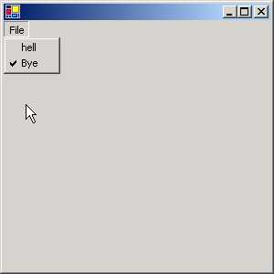
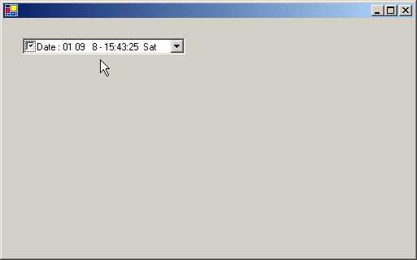
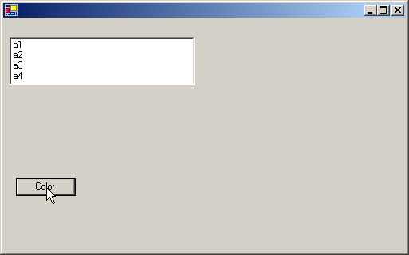

4
Controls
Windows Forms or Winforms is a
contemporary Windows-based forms package that endows the Windows programmer
with an innovative methodology for creating aesthetic user interfaces and
interactive applications. We will not ramble on about the pros and cons of the
package, but commence the creation of the smallest GUI (Graphical User
Interface) application.
a.cs
public class zzz
{
public static void Main()
{
zzz z = new zzz();
System.Windows.Forms.Application.Run(z);
}
}
Run the compiler as
>csc a.cs
Compiler Error
a.cs(6,1): error CS1502: The best overloaded method match for
'System.Windows.Forms.Application.Run(System.Windows.Forms.Form)' has some invalid arguments
a.cs(6,38): error CS1503: Argument '1': cannot convert from 'zzz' to 'System.Windows.Forms.Form'
An error is generated because,
Run, which is a static function in the Application class of the
System.Windows.Forms namespace, requires a Form object. The error distinctly
states its inability to convert a zzz to System.Windows.Forms.Form, which
proves that, an object that looks like Form is mandatory here, and not zzz.
a.cs
using System.Windows.Forms;
public class zzz : Form
{
public static void Main()
{
Application.Run(new zzz());
}
}
|
Screen 4.1 |
This program is not very
dissimilar from the previous one. The using keyword is employed to avoid the
inevitability of writing namespace with every object. The object z has no
efficacy here, since we are passing the zzz object directly to the Run
function. As the class zzz is derived from Form, no error is generated.
When we run the program, a small
blank window is displayed. You can click on the 'x' symbol to close it. The
output is substantial enough for a single line of code.
a.cs
using System.Windows.Forms;
public class zzz: Form
{
public static void Main()
{
Application.Run(new zzz());
}
zzz()
{
Text = "Vijay Mukhi";
}
}
|
Screen 4.2 |
In the constructor of the zzz
class, we have initialized a member called Text to the string value 'Vijay
Mukhi'. When we run the program, to our amazement, our window, which earlier
was without a title, now possesses the title 'Vijay Mukhi'.
This is the introductory concept
of Windows Forms programming. The class called Form has abundant properties
such as Text etc., which have specific relevance in a window. Any modifications
to the properties get reflected immediately in the window. The changes depend
upon the properties that we modify. In this case, the property of Text changes
the Caption, text displayed in the title bar.
A Form represents a window
displayed by an application. An application can have different types of
windows, such as a standard, tool bar, borderless or floating window. The Form
class is versatile enough to handle all the above types of windows, as it is
derived from innumerable classes. A Dialog Box, which is used to accept input
from the user, is available in two modes viz. modal and modeless. Our
trustworthy Form class can also handle such Dialog boxes with equal aplomb. We
normally use the Form class as the preliminary class for building WinForms
Applications.
The Main method calls the Run
function and gives it the Form object. In the constructor, we can modify the
properties of the Form Class to give the window a desired appearance. Since these properties are not static, they
cannot be altered in Main, but can be modified in the constructor or in any
other function.
a.cs
using System.Windows.Forms;
public class zzz
{
public static void Main()
{
Application.Run(new yyy());
}
}
class yyy : Form
{
public yyy()
{
Text = "Vijay Mukhi";
}
}
|
|
|
Screen 4.3 |

In this program, we have created
another class yyy that derives from the Form class. We have used this object as
a parameter to the function Run. The rules do not impel us to derive the class
zzz from Form. However, in all our programs, we shall follow the first approach
since we have decided to steer clear of controversy and stick to the rules.
a.cs
using System.Windows.Forms;
public class zzz: Form
{
public static void Main()
{
Application.Run(new zzz());
}
zzz()
{
ClientSize = new System.Drawing.Size(300,600);
Size = new System.Drawing.Size(100,200);
}
}
|
Screen 4.4 |
The above example sets two
properties of the Form class. The first, which is called ClientSize, is used by
Windows.Forms to decide how large our initial window would be. This property
has a default value, which can be overwritten by specifying the width and
height. As we need to furnish two values, we use a class called Size in the
namespace System.Drawing, which accepts two values. This class does not insist
on receiving meaningful values. The constructor is passed the width and height
of the desired window in pixels.
A graphics screen is divided
into small dots or pixels. Depending upon the configuration of the monitor and
graphics card, a computer can handle and display a certain number of pixels and
colors. The higher the configuration, the larger are the number of pixels and
colors that are available.
The size of the client area of
the form is computed as the size of the form minus the borders and the title
bar placed by Windows. They are not of our concern, since we shall be placing
our own controls in our form. ClientSize is a property with a default value,
and it gets updated automatically whenever the form is resized.
The next property is Size. The
user enjoys the flexibility of altering the size of the window at run time.
Size is initialized in manner similar to ClientSize.
a.cs
using System.Windows.Forms;
using System.Drawing;
public class zzz: Form
{
Button b;
public static void Main()
{
Application.Run(new zzz());
}
zzz()
{
b = new Button();
Controls.Add(b);
}
}
|
Screen 4.5 |
We now see a small button at the
top left hand corner of our Window. How did we create this button? To do so, we
first, create an object b, that looks like a Button class.
The Form class has a large
number of properties such as ClientSize, Size etc. One of them is called
Controls, which is a read-only property since it contains only a Get. This
property returns a Control.Collection object, whose Add function adds the
control to the Client area of the window. We shall be sprucing up our button
shortly.
a.cs
using System.Windows.Forms;
using System.Drawing;
public class zzz: Form
{
Button b;
public static void Main()
{
Application.Run(new zzz());
}
zzz()
{
b = new Button();
b.Location = new Point(100,200);
b.Size = new Size(100,50);
b.Text = "Vijay Mukhi is smart";
Controls.Add(b);
}
}
|
Screen 4.6 |
Anything that is placed on a
form is called a Control or a Widget. Similar to a Form, a button control,
popularly known as a command button, has numerous properties. One of them is
the Location property, which decides the position on the Client area where the
button will be positioned.
Here, we use the Point class and
not Size, even though both are objects that represent two numbers. By
convention, a Size object represents a width and a height and a Point object
has an x and y co-ordinate system, starting from the upper left corner.
Most properties have a default
value. Since this fact about default values has been reiterated numerous times,
we shall not repeat it again. The Size property determines the initial size of
the window and the string assigned to the Text property is displayed on the
button.
a.cs
using System.Windows.Forms;
using System.Drawing;
public class zzz: Form
{
Button b;
public static void Main() {
Application.Run(new zzz());
}
zzz()
{
b = new Button();
b.Location = new Point(100,200);
b.Size = new Size(100,50);
b.Text = "Vijay Mukhi is smart";
b.Click += new System.EventHandler(abc);
Controls.Add(b);
}
public void abc(object s, System.EventArgs e)
{
MessageBox.Show("Hi");
}
}
|
Screen 4.7 |
In the earlier example, clicking
on the button was an exercise in futility because the button did not achieve
anything. After augmenting the code of the program, when we click on the
button, we see a MessageBox that displays the greeting 'Hi'. The rationale
behind a button control is that, when we click on it, some code should get
executed, some action should take
place.
The button class has an event
object called Click, which accepts an object of type EventHandler. The syntax
for events uses the += symbol to add a function that is to be called when the
event handler gets activated. The function name is given through the
EventHandler delegate. This delegate has been specially created only to handle
events that a control will generate.
Thus, the function abc, which is
passed as a parameter to the EventHandler delegate, must have a certain
signature. The first parameter is the generic object that could represent any
entity identifying the caller. The second parameter is an EventArgs object,
which we will explain shortly. Thus, each time we click on the button, the
function abc gets called. This function in turn calls the static function Show
from the MessageBox class to display 'Hi'.
a.cs
using System.Windows.Forms;
using System.Drawing;
public class zzz: Form {
Button b;
public static void Main()
{
Application.Run(new zzz());
}
zzz()
{
b = new Button();
b.Location = new Point(100,200);
b.Size = new Size(100,50);
b.Text = "Vijay Mukhi is smart";
b.Click += new System.EventHandler(abc);
b.Click += new System.EventHandler(pqr);
Controls.Add(b);
}
public void abc(object s, System.EventArgs e){
MessageBox.Show("Hi");
}
public void pqr(object s, System.EventArgs e)
{
MessageBox.Show("Bye");
}
}
|
Screen 4.8 |
This program reveals the
veritable power of events and delegates. Two functions, abc and pqr, are called
whenever the button is clicked. To achieve this, all that we need to do in the
code is to call the Click event again, using the += symbol, followed by the
name of the new function. The -= symbol is used if we change our minds. This is
a type safe way of calling code in response to an event.
a.cs
using System.Windows.Forms;
using System.Drawing;
public class zzz: Form {
Button b;
TextBox t;
public static void Main() {
Application.Run(new zzz());
}
zzz()
{
b = new Button();
b.Location = new Point(100,200);
b.Size = new Size(100,50);
b.Text = "Vijay Mukhi is smart";
b.Click += new System.EventHandler(abc);
t = new TextBox();
t.Text = "Hell";
t.Location = new Point(10,20);
Controls.Add(b);
Controls.Add(t);
}
public void abc(object s, System.EventArgs e)
{
MessageBox.Show(t.Text + " " + ClientSize );
}
}
|
Screen 4.9 |
In the Forms Window, we now see
two controls: a Button and a TextBox object that lets us enter some text. The
textbox widget also has a large number of properties associated with it. We
shall not be repeating this obvious fact for all the other controls. The
properties Location and Size work in a similar manner when used with any
Control, but the property Text differs, depending upon the object in use. For a
button, it represents the caption, whereas for a text box, it represents the
text that is entered. Thus, some of the properties play different roles when
used in different controls.
|
Screen 4.10 |
Each time the button is clicked,
we would like to display the text that has been entered by the user in the text
box. In the eventhandler function abc, the property Text reveals the text
entered into the textbox. The
MessageBox class is used to display the value, along with the size of the
client area.
You can change the size of the
window or change the contents of the text box and observe the contents of the
MessageBox changing dynamically.
a.cs
using System.Windows.Forms;
using System.Drawing;
public class zzz: Form
{
public static void Main()
{
Application.Run(new zzz());
}
public override void Dispose()
{
base.Dispose();
MessageBox.Show( "hi " + ClientSize );
}
}
This program displays our
ability to invoke code at a specific point in time, which in this case, is at
the stage when the user closes the window or when the application quits out. It
is akin to fulfilling the last wishes of the program.
|
Screen 4.11 |
As the application is quitting,
it calls a function called Dispose. So, if you ever want code to be called at
the point when an application is about to quit out, you must place it in the
Dispose function. This code could be used to close files or do anything else
that the programmer desires.
It is not mandatory to call
Dispose of the base class, but it is always a good programming practice to call
the base class function first, and then augment it with your own code. In this
particular case, it is inconsequential, but under different circumstances,
things may go out of hand if this advice is not heeded.
a.cs
using System.Windows.Forms;
using System.Drawing;
public class zzz: Form {
public static void Main()
{
Application.Run(new zzz());
}
Brush b; int ii = 0;
protected override void OnPaint(PaintEventArgs e)
{
Graphics g = e.Graphics;
b = new SolidBrush(Color.Blue);
ii++;
g.DrawString("Vijay Mukhi " + ii, Font, b ,1,25);
}
}
In this program, we are
overriding a function called OnPaint, which is present in the Form class. The
OnPaint function gets called each time the window has to be redrawn. Therefore,
all code that is to be written to the screen must be written in this function.
This code cannot be placed anywhere else in the program.
Our next endeavor is to create
an object that has functions which display text on the screen or draw a
picture. The class that contains these display functions is called Graphics.
Thus, we create an object g that looks like Graphics. As an object that looks
like Graphics cannot be instantiated, WinForms provides us with an object of
type PaintEventArgs with the OnPaint Function. This class contains members
required for graphical display. Hence, g is initialized to the Graphics member
in e.
As mentioned earlier, OnPaint
gets called whenever our window has to be redrawn. Whenever OnPaint gets
called, it creates an object that looks like PaintEventArgs and then passes it
as a parameter to the function. This object has a member called Graphics, which
contains functions used for drawing in our client area. The DrawString function
requires the text that is to be displayed and its Font.
The Form class provides us with
the object called Font. Thereafter, the text color, or to be more precise, the
brush is to be specified. Here, we want a solid Brush like object. So, we
create an object b, and give it a color in which the text should be displayed.
There is a static object Blue in the class Color that stands for the color
blue. The spelling of 'color' is as per the American usage. Finally, the x and
y co-ordinates on the screen are specified.
This positions the text in the
window at these specified co-ordinates.
Thus, the function has a total
of 5 parameters:-
• The text to be displayed.
• The font in which the text is to be displayed.
• The text color or the brush.
• The x co-ordinate.
• The y co-ordinate.
Here, we have specified certain
values, but every time we use DrawString, we can conveniently specify different
values for these parameters. Thus, the second DrawString function can display
different text and use a different font or brush. As the system does not have a
default brush or font, we call it a Stateless Model.
|
Screen 4.12 |
Along with 'Vijay Mukhi', we
have used a variable called ii, which has been initialized to 0. In the OnPaint
function, we increment this variable by 1. Before the window is displayed,
function OnPaint gets called. Thereafter, OnPaint gets called whenever the
'minimize' and 'maximize' buttons of the window are clicked.
The function OnPaint gets called
whenever our client area has to be redrawn due to any action carried out by the
user. This function has to be marked with the modifier named protected. This is
because the original function in the Form class is tagged with this modifier.
We can override a function of the base class, provided we do not change any of
the modifiers. By making OnPaint protected, only derived classes can use the
OnPaint function.
a.cs
using System.Windows.Forms;
using System.Drawing;
public class zzz: Form {
public static void Main()
{
Application.Run(new zzz());
}
Brush b; int ii = 0;
protected override void OnPaint(PaintEventArgs e)
{
Graphics g = e.Graphics;
b = new SolidBrush(Color.Blue);
ii++;
g.DrawString("Vijay Mukhi " + ii, Font, b ,1,25);
RectangleF r = new RectangleF(20, 60, 100, 25);
g.FillRectangle(new SolidBrush(Color.Gainsboro), r);
g.DrawString("Sonal Mukhi", Font, new SolidBrush(Color.Red), r);
StringFormat f = new StringFormat();
f.Alignment=StringAlignment.Center;
RectangleF r1 = new RectangleF(20, 100, 100, 25);
g.DrawString("Sonal Mukhi", Font, new SolidBrush(Color.Black), r1,f);
g.RotateTransform(-30);
g.TranslateTransform(0, 100);
g.DrawString("vijay mukhi", Font, new SolidBrush(Color.Orange), 20, 40);
g.ResetTransform();
}
}
|
Screen 4.13 |
The output of this program is a
window with text displayed haphazardly. This output is nothing to write home
about, but is useful in elucidating numerous concepts.
A rectangleF structure stores
two point objects i.e. it specifies a rectangular area of the window. We start
at one corner, where the x and y co-ordinates are 20 and 60, and the opposite
corner where the x and y co-ordinates are 100 and 25 respectively. The function
FillRectangle from the Graphics class is used to create and fill the above
rectangular portion of the screen with the color Gainsboro. The DrawString
function is overloaded to take not only x and y as the last two parameters, but
also a rectangular area into which it will draw a string.
We would now like to center the
above string in the rectangular area. This is easier said than done, because,
it entails creation of an object that looks like StringFormat with the
Alignment property set as Center. The documentation specifies many more options
that can be implemented. The StringFormat object is passed as the last
parameter to the DrawString function, resulting in the string being shown as
centered, instead of being Left aligned, which is the default setting.
If we want to rotate the image
by 30 degrees, we just have to call a function named RotateTransform from the
Graphics class and pass as a parameter, the amount of rotation that is
required. You can then watch the image get displayed at the specified angle.
Beware, too acute an angle may sprain your neck! The next function, named
TranslateTransform, is optional. It is used to move the text around in the
client area horizontally or vertically. Whenever we transform something, it
stays in the transformed position. But thereafter, if we do not want the other
objects to be in this form, we need to use the function ResetTranform to undo
the transform. However, it is optional.
a.cs
using System.Windows.Forms;
using System.Drawing;
public class zzz: Form
{
public static void Main()
{
Application.Run(new zzz());
}
Brush b;
protected override void OnPaint(PaintEventArgs e)
{
Graphics g = e.Graphics;
b = new SolidBrush(Color.FromArgb(180, Color.Black));
RectangleF r = new RectangleF(20, 20, 50, 50);
g.FillRectangle(b, r);
}
}
|
Screen 4.14 |
The topic of Brushes is so
exhaustive that a thesis can well be written on it. In this program, we use a
special brush to fill up a rectangular area on our screen.
Here, we specify not only a
color, but also a number, which is the alpha value and has a range from 0 to
255. The larger the value, the darker will be the color. To put it technically,
the larger the value, the lesser will be the translucence and vice-versa.
a.cs
using System.Windows.Forms;
using System.Drawing;
public class zzz: Form
{
public static void Main()
{
Application.Run(new zzz());
}
Brush b;
protected override void OnPaint(PaintEventArgs e)
{
Graphics g = e.Graphics;
b = new SolidBrush(Color.Black);
Font f = new Font("Times New Roman", 30);
g.DrawString("Vijay Mukhi " , f , b ,1,25);
}
}
|
Screen 4.15 |
In this program, we will shed
light on Fonts. When you read a newspaper or magazine, the style of the letters
looks different in each of them. This difference is due to the Font or the
Typeface used. There are numerous fonts in the world of letters.
While displaying text, we can be
very specific about the way in which the letters look. To enhance their visual
appeal, we create an object that looks like Font. Then, in the constructor, the
Name of the font is specified along with the Size in points. Remember that 72
points make an inch. Thus my name, Vijay Mukhi, now gets displayed in a size
that is bigger than normal.
a.cs
using System.Windows.Forms;
using System.Drawing;
public class zzz: Form
{
public static void Main()
{
Application.Run(new zzz());
}
protected override void OnPaint(PaintEventArgs e)
{
Graphics g = e.Graphics;
Image i;
i = new Bitmap("sample.jpg");
g.DrawImage(i, 29, 20, 283, 212);
}
}
|
Screen 4.16 |
The above program merely
displays an image. A file with a jpg or a gif extension contains images or
pictures. To display images, we use a class called Image that can recognize
pictures. Even though i is an image object, we initialize it to an object that
looks like Bitmap. An Image class is an abstract class and the class Bitmap
derives from it.
An Image class could represent a
picture, which is not just an image, but could also be a cursor, icon etc. The
DrawImage function accepts an image object as the first parameter, followed by
the screen co-ordinates at which the image has to be positioned. The above .jpg
file is part of the samples offered while installing the .NET SDK. So, search
for the file and copy it to the current working directory. Like the text
sample, this picture can also be rotated, transformed etc.
a.cs
using System.Windows.Forms;
using System.Drawing;
public class zzz: Form
{
public static void Main()
{
Application.Run(new zzz());
}
protected override void OnPaint(PaintEventArgs e)
{
Graphics g = e.Graphics;
Image i = new Bitmap("colorbars.jpg");
Brush b = new TextureBrush(i);
g.DrawString("Vijay Mukhi is very smart" , Font, b ,1,25);
}
}
|
Screen 4.17 |
By combining a Brush and an
image, we can create a multicolor brush. In one of the earlier programs, we had
used a Solid brush. Here, we are using a Texture brush. This brush fills the
interiors of a shape with a picture.
Thus, the text gets reflected in
a brush, which reminds us of a rainbow. You can enhance the aesthetic appeal of
your applications by using this facility.
a.cs
using System.Windows.Forms;
using System.Drawing;
using System.Drawing.Drawing2D;
public class zzz: Form {
public static void Main()
{
Application.Run(new zzz());
}
protected override void OnPaint(PaintEventArgs e)
{
Graphics g = e.Graphics;
Pen p = new Pen(Color.FromArgb(150, Color.Purple), 20);
p.DashStyle = DashStyle.Dash;
p.StartCap = LineCap.Round;
Point [] pp = new Point[] {new Point(200, 140),new Point(700, 240),new Point(500, 340)};
g.DrawCurve(p,pp);
}
}
|
Screen 4.18 |
The above program introduces
freehand drawing. A pen is like an artist's brush, which is used to draw any
shape that permeates the mind. In our program, we commence by creating a Pen object
p. It is initialized to a particular alpha color using FromArgb function from
the Color class, and to a specified width.
The constructor can also be
provided with other parameters, such as a brush. A pen is used to draw lines
and curves.
A Pen can also draw a line of a
specified width and style. The default DashStyle is Continuous. If we change
the DashStyle to Dash, the starting point becomes a rounded edge. The default
is a Straight Edge. The line drawn by a pen is very versatile, and can employ a
variety of fill styles, colors and textures. The DrawCurve function paints a
pen object that specifies how to draw a curve. It has an array of points with
the individual three point objects specifying where the curved line should be
drawn.
a.cs
using System.Windows.Forms;
using System.Drawing;
using System.Drawing.Drawing2D;
public class zzz: Form {
public static void Main() {
Application.Run(new zzz());
}
protected override void OnPaint(PaintEventArgs e)
{
Graphics g = e.Graphics;
Image i= new Bitmap("BoilingPoint.jpg");
Brush pb = new TextureBrush(i);
Pen p= new Pen(pb, 75);
g.DrawLine(p,1,5,150,200);
}
}
|
Screen 4.19 |
We can use a brush that looks
like an image and create a pen that will draw lines in the garb of a picture.
The DrawLine function accepts two sets of numbers, the x-y co-ordinates of the
starting point and the x-y co-ordinates of the ending point. It draws a thick
line joining these two points. Thus, we can use this function to draw any
possible shape.
a.cs
using System.Windows.Forms;
using System.Drawing;
using System.Drawing.Drawing2D;
public class zzz: Form
{
public static void Main()
{
Application.Run(new zzz());
}
protected override void OnPaint(PaintEventArgs e)
{
Graphics g = e.Graphics;
HatchBrush b = new HatchBrush(HatchStyle.ForwardDiagonal, Color.Green, Color.FromArgb(100, Color.Yellow));
g.FillEllipse(b, 250, 10, 100, 100);
Rectangle r = new Rectangle(300, 250, 100, 100);
LinearGradientBrush lb = new LinearGradientBrush(r, Color.Red, Color.Yellow,LinearGradientMode.BackwardDiagonal);
g.FillRectangle(lb, r);
}
}
|
Screen 4.20 |
On maximizing the screen, we see
two figures; one is a filled circle, while the other is a rectangular block. We
are equipped with a large number of brushes akin to those in the artistic
world. One of them is a HatchBrush. The constructor of HatchBrush accepts a
hatch style and two colors, viz. a background color and a foreground color.
The first parameter is the hatch
style, which can be one of six possible hatch styles. The foreground color, in
this case, green, defines the color of the lines to be drawn and the background
color defines the color for the gaps between the lines.
The FillEllipse function in
Graphics fills up the shape to display the effect of the brush. We could have
used the Rectangle function also, but as we are trying to be as akin as
possible to the samples provided by Microsoft, we have used the Ellipse
function.
A LinearGradientBrush can
represent color gradients and multi-color gradients. A gradient represents a
transformation from one color to another. A linear gradient is defined
alongside a line that is specified by the width of a rectangle or by any two
points. Thus, a two-color gradient will commence with a starting color and
conclude with the ending color. The blend from one color to the next can be
customized. First, we specify the object that is to be colored, which is a
rectangle in this case. The gradient starts with the left corner and ends at
the lower right corner. Thereafter, we follow with the starting color followed by
the ending color. Finally, the angle measured in degrees in the clockwise
direction is mentioned, starting from the x-axis. This defines the orientation
of the gradient. You can change the angle and witness the spectacular effects.
Menus
a.cs
using System.Windows.Forms;
using System.Drawing;
using System.Drawing.Drawing2D;
public class zzz: Form
{
public static void Main()
{
Application.Run(new zzz());
}
MainMenu m;
public zzz()
{
m = new MainMenu();
MenuItem mi= m.MenuItems.Add("&File");
Menu = m;
}
}
|
Screen 4.21 |
Let us now build a menu. We have
created an object m, which symbolizes the MainMenu. MainMenu is called a
control and represents the menu structure for a Form. It is the root of the
menu.
A menu consists of various menu
items, which are displayed horizontally across the menu. We want to create a
menu item that displays the word 'File For this, we need another class called
MenuItem. A MenuItem can represent either an individual menu item depicting a
command, or it can cascade to another popup of menu items.
MenuItems is a read-only
property in MainMenu that gives a reference to all the MenuItems currently
available in the menu. We have none so far. This CollectionObject also has a
function called Add, which is used to add menu items. To do so, the text of the
item that is to be displayed must be stated as the parameter to the Add
function. We can also remove any menu item that has been previously added.
The variable mi stores the
MenuItem object returned by the Add function. Thereafter, Menu, which is an
object of type MainMenu, available in Form, is initialized to the menu that we
desire. The appearance of the menu depends upon the menu object stored in
Menu.
When we run the program, we see
the word File displayed in the top left corner. At this stage, nothing happens
when we click on it. On pressing the Alt key, F is displayed as underlined
since the symbol & underlines the character it is preceded with.
a.cs
using System.Windows.Forms;
using System.Drawing;
using System.Drawing.Drawing2D;
public class zzz: Form {
public static void Main() {
Application.Run(new zzz());
}
MainMenu m;
public zzz() {
m = new MainMenu();
MenuItem mi= m.MenuItems.Add("&File");
mi.MenuItems.Add("Hi");
mi.MenuItems.Add("-");
mi.MenuItems.Add("Bye");
Menu = m;
} }
|
Screen 4.22 |
Now things look more visually
attractive. When we click on File or use the accelerator Alt-F, a menu pops up
with the word 'Hi', followed by a separator and then finally by the word 'Bye'.
A separator is used to logically
group menus together. However, when we click on 'hi' or 'bye', nothing happens.
This situation needs to be redressed, since a menu should activate some code.
a.cs
using System.Windows.Forms;
using System.Drawing;
using System.Drawing.Drawing2D;
public class zzz: Form
{
public static void Main()
{
Application.Run(new zzz());
}
MainMenu m;
public zzz()
{
m = new MainMenu();
MenuItem mi= m.MenuItems.Add("&File");
MenuItem m1;
m1 = new MenuItem("Hi", new System.EventHandler(abc), Shortcut.CtrlF11);
mi.MenuItems.Add(m1);
mi.MenuItems.Add("Bye");
Menu = m;
}
void abc(object sender, System.EventArgs e)
{
MessageBox.Show("hell");
}
}
|
Screen 4.24 |
|
|
Screen 4.23 |
|
Now, whether you either click on
File and then on the word 'Hi', or you press Control+F11, you will see a
message box with the word "hell" displayed in it.
The MenuItem constructor is
overloaded. The first parameter is the text to be displayed. The second
parameter is a delegate that encompasses the function to be called whenever
this menu item is activated. Just as the pen is mightier than the sword, under
some circumstances, the keyboard is certainly mightier than the mouse. At
times, it is faster to use a keyboard shortcut, instead of using the mouse.
Thus, the last parameter is the keyboard shortcut key, which is part of an
enumerator. This MenuItem object is passed to the Add function, that either
accepts a string or a MenuItem object.
a.cs
using System.Windows.Forms;
using System.Drawing;
using System.Drawing.Drawing2D;
public class zzz: Form
{
public static void Main()
{
Application.Run(new zzz());
}
MainMenu m;
public zzz()
{
m = new MainMenu();
MenuItem mi= m.MenuItems.Add("&File");
MenuItem a = new MenuItem("One",new System.EventHandler(abc));
MenuItem b = new MenuItem("two",new System.EventHandler(abc));
mi.MenuItems.Add("hell",(new MenuItem[]{ a, b })
);
Menu = m;
}
void abc(object sender, System.EventArgs e)
{
MessageBox.Show("hell");
}
}
|
Screen 4.26 |
|
|
Screen 4.25 |
|

Here, we have a popup within a
popup. When you click on File, you will see the word 'hell' displayed. You will
also see an arrow pointing to the right, along with the menu item. If you move
the mouse over the arrow, a popup is displayed, containing the two menu items
'one' and 'two'. If we click on them, a message box with the word 'hell' gets
displayed.
In the program, with a single
statement, we have created two menu items, a and b, followed by an array of
menu items. This array is then passed as the last parameter to the Add
function. Thus, all the menus become sub-menus. In this case, the event handler
is associated with the submenu options, since clicking on the menu item
displays the sub-menu.
a.cs
using System.Windows.Forms;
using System.Drawing;
using System.Drawing.Drawing2D;
public class zzz: Form
{
public static void Main()
{
Application.Run(new zzz());
}
MainMenu m;
public zzz()
{
m = new MainMenu();
MenuItem mi= m.MenuItems.Add("&File");
mi.MenuItems.Add( "hell",new System.EventHandler(abc));
mi.MenuItems.Add( "Bye",new System.EventHandler(abc));
Menu = m;
}
void abc(object s, System.EventArgs e)
{
MenuItem m = (MenuItem) s;
if ( m.Checked)
m.Checked = false;
else
m.Checked = true;
}
}
|
 |
|
|
Screen 4.27 |
Screen 4.28 |
We add two menu items, 'hell'
and 'Bye' to our File menu and assign the same function abc to handle their
events. Clicking on any one of the menu options results in a call to the
function abc. This function takes two parameters. The first parameter s,
represents the menu item that was clicked on. If the first menu option 'hell'
is clicked, then the parameter s is not an object, but a menu item representing
'hell' and vice versa.
Every MenuItem has an option
called Checked, which if True, will display a tick mark on the menu item. Thus,
you can Check or Uncheck a menu option by clicking on it. You may click on each
menu option to observe this effect.
a.cs
using System.Windows.Forms;
using System.Drawing;
using System.Drawing.Drawing2D;
public class zzz: Form
{
public static void Main()
{
Application.Run(new zzz());
}
MainMenu m;
public zzz()
{
m = new MainMenu();
MenuItem mi= m.MenuItems.Add("&File");
mi.MenuItems.Add( "hell",new System.EventHandler(abc));
mi.MenuItems.Add( "Bye",new System.EventHandler(abc));
Label l = new Label();
ContextMenu lm;
lm = new ContextMenu();
l.ContextMenu = lm;
l.Text = "Vijay Mukhi";
lm.MenuItems.Add(mi.CloneMenu());
Controls.Add(l );
Menu = m;
}
void abc(object s, System.EventArgs e)
{
MenuItem m = (MenuItem) s ;
if ( m.Checked)
m.Checked = false;
else
m.Checked = true;
}
}
The program output will display
the same menu - File, as seen in the earlier program. The text Vijay Mukhi will
also be visible. If you place the mouse on this text and right click the mouse,
you will see the same menu as seen with the File option.
|
Screen 4.29 |
Screen 4.30 |
This is called a Context
Sensitive Menu. These two menus, however, are different. If you Check a menu
option in this menu by clicking on it, it does not carry the tick mark to the
other menu.
We first create two objects:
• The first is lm, which looks like a ContextMenu.
• The second is l, which looks like a label.
|
Screen 4.31 |
Every label has a member called
ContextMenu, wherein we can specify a Context Sensitive menu. This member is
initialized to lm. As we have already created a menu item mi, we can reuse this
menu item.
However, a menu item cannot be used twice. Hence, calling the function CloneMenu off MenuItem creates a clone. This clone menu is then passed to the Add function of MenuItems in the ContextMenu.
Writing
Controls
Let us start by creating the
simplest control that money can buy. We create the following files:
c.cs
using System.Windows.Forms;
using System.Drawing;
public class yyy : Control
{
}
h.cs
using System.Windows.Forms;
public class zzz : System.Windows.Forms.Form
{
yyy a;
public zzz()
{
a = new yyy();
Controls.Add(a);
}
public static void Main() {
Application.Run(new zzz());
}
}
a.bat
del *.exe
del *.dll
csc.exe /t:library c.cs
csc.exe /r:c.dll h.cs
h
The file c.cs contains our very
first custom control. In order to create our own user-defined control, we
create a class yyy and derive it from the Control class. The Control class
implements the basic code required by classes to implement the behavior of a
control or a widget. This code can handle user input with a keyboard or a
pointing device, such as a mouse. Message handling and security features are
also supported.
At the end of the day, all
controls are merely child windows. The Control class defines the area or bounds
of a control along with the fonts, colors and images. This class allows
painting, context menus and anchoring with docking behavior.
Earlier, we had displayed scores
of controls in our containers, written by the Microsoft developers. All these
controls were derived from the Control class.
|
Screen 4.32 |
Thus, a user control like yyy is
an instance of a Control class, which is added to the Form using the Add
function off the Controls collection. It can't get any simpler. On running the
executable, we see no output. Yet, since no error was generated, we presume
that all went well.
The major difference between the
Microsoft controls and our controls is, the file in which the code for the
control is finally placed. We have placed our control code in assembly c.dll,
whereas, Microsoft controls are placed in System.Windows.Forms.dll.
c.cs
using System.Windows.Forms;
using System.Drawing;
public class yyy : Control
{
protected override void OnPaint(PaintEventArgs e)
{
e.Graphics.DrawString(Text,Font, new SolidBrush(ForeColor), ClientRectangle);
}
}
h.cs
using System.Windows.Forms;
public class zzz : System.Windows.Forms.Form{
yyy a;
public zzz() {
a = new yyy();
a.Size = new System.Drawing.Size(600, 450);
a.Text = "Vijay Mukhi";
Controls.Add(a);
}
public static void Main() {
Application.Run(new zzz());
}
}
|
Screen 4.33 |
In the above example, we have
overridden a function called OnPaint in the Control class. This function gets
called whenever a control is to be redrawn on the screen. It is passed a
PaintEventArgs object as a parameter, from where we summon the DrawString
function to paint a string in a specified font and color, at a particular
location. The first parameter, Text, is a property, which refers to the string
to be displayed. The string 'Vijay Mukhi' is presently displayed in the window.
In the container h.cs, we have
initialized the property Text contained in the Control class to 'Vijay Mukhi'.
The Size property is also initialized, so that our control has a specific size
in the container.
h.cs
using System.Drawing;
using System.Windows.Forms;
public class zzz : Form {
Button b;
ccc c;
public zzz() {
b = new Button();
c = new ccc();
b.Anchor = System.Windows.Forms.AnchorStyles.Bottom;
b.DialogResult = System.Windows.Forms.DialogResult.OK;
b.FlatStyle = System.Windows.Forms.FlatStyle.Flat;
b.Size = new System.Drawing.Size(96, 24);
b.Text = "&Save";
b.Location = new System.Drawing.Point(8, 328);
b.Click += new System.EventHandler(abc);
Text = "Sonal Mukhi";
AcceptButton = b;
ClientSize = new System.Drawing.Size(400, 373);
c.Anchor=AnchorStyles.Top | AnchorStyles.Bottom | AnchorStyles.Left | AnchorStyles.Right;
c.AutoScrollMinSize = new System.Drawing.Size(0, 0);
c.Size = new System.Drawing.Size(400, 310);
c.Text = "Vijay Mukhi";
Controls.Add(b);
Controls.Add(c);
c.cust = ddd.rrr();
Size = new Size(400, (373 + SystemInformation.CaptionHeight));
}
void abc(object sender, System.EventArgs e)
{
c.aaa();
MessageBox.Show("vijay "+ c.cust);
}
public static void Main(string[] args)
{
Application.Run(new zzz());
}
}
c.cs
using System;
using System.Windows.Forms;
using System.Drawing;
public class ccc : UserControl
{
TextBox t;
TextBox ID;
Label l;
ddd c;
public ccc()
{
t = new TextBox();
l = new Label();
ID = new TextBox();
Text = "Vijay Mukhi";
Size = new System.Drawing.Size(384, 304);
t.Size = new System.Drawing.Size(88, 20);
t.Location = new System.Drawing.Point(88, 70);
l.Size = new System.Drawing.Size(64, 16);
l.Location = new System.Drawing.Point(8, 32);
l.Text = "ID:";
ID.ReadOnly = true;
ID.Size = new System.Drawing.Size(200, 20);
ID.Location = new System.Drawing.Point(88, 30);
ID.Enabled = false;
Controls.Add(t);
Controls.Add(ID);
Controls.Add(l);
}
public ddd cust
{
get
{
return c;
}
set
{
c=value;
ID.Text = c.ID;
t.Text = c.ti;
}
}
public void aaa()
{
c.ti = t.Text;
}
}
cc.cs
using System;
using System.ComponentModel;
using System.IO;
public class ddd : Component
{
string i ;
string t ;
public static ddd rrr()
{
ddd c = new ddd("111");
c.ti = "Vijay";
return c;
}
internal ddd(string s): base()
{
i = s ;
}
public string ID
{
get
{
return i ;
}
}
public string ti
{
get
{
return t ;
}
set
{
t = value ;
}
}
public override string ToString()
{
StringWriter sb = new StringWriter() ;
sb.WriteLine("Sonal \n");
sb.WriteLine(i);
sb.Write(t);
return sb.ToString();
}
}
a.bat
del *.exe
del *.dll
csc.exe /t:library /out:c.dll c.cs cc.cs
csc.exe /R:c.dll h.cs
h
This program is a rather
protracted one. As usual, we start with the container in h.cs. In the zzz
constructor, we first create a button b and an object c that is an instance of
our user control ccc. The control is present in the assembly c.dll. What this
class presently does is not significant. We begin by initializing a large
number of properties in the button.
The Anchor property decides as
to which edges of the control are to be anchored with the edges of the
container. Here, we have chosen the Bottom edge.
The DialogResult property is the
value that is returned to the parent form when we click on the button. The
value returned is OK.
The FlatStyle property belongs
to the ButtonBase class and is one of the numerous properties that influence
the flat style appearance of the button. Knowledge of GUI programming implies
cognizance and comprehension about all the facets of making your application more
comely and pleasing to the eye. The Size, Text and Location properties were
explained earlier.
Each time we click on the
button, the function abc gets called. The Text property decides on the title of
the windows. The AcceptButton property requires an object that represents a
button. Every form has a feature, which associates the Enter key with a button.
The resultant effect is that pressing the Enter key on the keyboard simulates a
click on the associated button. Thus, in the above form, pressing Enter or
clicking on the button would result in a call to the function abc. The
ClientSize property decides the size of the windows.
Our User Control too can
initialize properties since they belong to the Control class. In the program,
we have set the Anchor, AutoScrollMinSize, Size and Text properties of our
user-defined control class ccc, even though our control may not have
implemented these properties directly.
Using the Add function, we have
then added the button and the control ccc to the form. Finally, we have called a static function
rrr from the class ddd that initializes a property cust from our user-defined
control.
When we run this program, we see
two text boxes, a label and a button. It is obvious that other than the button,
the other widgets were created by the class ccc. This provides ample credence
to our belief that our user-defined control can do its biding.
|
Screen 4.35 |
|
|
Screen 4.34 |
|
We shall now endeavor to
comprehend what the constructor of class ccc in file c.cs is attempting to do.
The constructor contains two text boxes, one called ID to store the id of the
user, and the other called t to store the user's name. The label l is used to display a simple descriptive message. Since
we do not want the user to change the value contained in ID, we assign the
value true to its ReadOnly property and assign the value false to its Enabled
property. Thereafter, we add these three widgets to the form. Hence, we can now
see four widgets on the screen.
In the container h.cs, we call a
static function, rrr off class ddd. The ddd class is created in cc.cs and is
derived from Component. In the rrr function, we create an object c, which looks
like ddd and pass a value of 111 to the constructor. The constructor of class
ddd initializes an instance variable i to the value contained in s. The
variable i stands for the user id.
Class ddd has a property called
ti, which is initialized to my name, Vijay. This property ti sets another
instance variable t to the value 'Vijay'. Thus, we have initialized two instance
members of class ddd to specific values.
The value returned on calling
the rrr function is stored in the cust property of the control c. The class ccc
contains the property having type ddd.
The property Cust stores the ddd
object in the variable c for later use. It also initializes the Text property
of the text boxes to the ID and Name of the user that the two properties in the
class ddd were initialized to. Thus, we see '111' and 'Vijay' displayed in the
text boxes.
When we click on the button
labeled 'Save', the function abc gets called. This function first calls the
function aaa from class ccc using the object c. In aaa, we initialize the ti
property of the control to the value present in the textbox. The ID property is
dimmed out, and hence its value can never be changed. The object c represents
the ddd object in class ccc.
To display a string, an object,
whose data type is not a string, has to call the ToString function in the
datatype. The cust property in class ccc has the type of ddd, which contains
the ToString function. This function uses the StringWriter class to concatenate
the word 'Sonal' with the value of the instance variables i and t, which
eventually get displayed in the MessageBox.
The above program demonstrates
two crucial points:
(a) All the code that refers to the user has been encapsulated in class ddd.
(b) The user interface code is entered in class ccc.
The container is oblivious to
these classes and does not bother to verify whether there are two classes or
one. While the class ccc contains code pertaining to User Interface interaction
only, the class ddd contains code relating to the actual object.
h.cs
using System.Drawing;
using System.Windows.Forms;
public class zzz : Form {
RadioButton r1,r2;
GroupBox g1;
sss s;
public zzz()
{
r1 = new System.Windows.Forms.RadioButton();
r2 = new System.Windows.Forms.RadioButton();
r1.Location = new System.Drawing.Point(24, 24);
r1.Size = new System.Drawing.Size(128, 24);
r1.Text = "Vijay";
r1.Checked = true;
r1.CheckedChanged += new System.EventHandler(r1f);
r2.Location = new System.Drawing.Point(24, 64);
r2.Size = new System.Drawing.Size(128, 24);
r2.Text = "Mukhi";
r2.CheckedChanged += new System.EventHandler(r2f);
g1 = new System.Windows.Forms.GroupBox();
g1.Size = new System.Drawing.Size(192, 152);
g1.Text = "Sonal";
g1.Location = new System.Drawing.Point(320, 16);
s = new sss();
Text = "Control Example";
ClientSize = new System.Drawing.Size(528, 325);
s.Size = new System.Drawing.Size(304, 328);
s.TabIndex = 0;
s.Anchor = AnchorStyles.Left | AnchorStyles.Right;
s.Font = new System.Drawing.Font("TAHOMA", 16f, System.Drawing.FontStyle.Bold, System.Drawing.GraphicsUnit.World);
s.Text = "Simple Control";
s.dmc += new System.EventHandler(sf);
Controls.Add(g1);
Controls.Add(s);
g1.Controls.Add(r2);
g1.Controls.Add(r1);
}
void r2f(object sender, System.EventArgs e)
{
if (r2.Checked)
{
s.dm = ddd.a2;
}
}
void r1f(object sender, System.EventArgs e)
{
if (r1.Checked)
{
s.dm = ddd.a1;
}
}
void sf(object sender, System.EventArgs e)
{
if (s.dm == ddd.a1)
MessageBox.Show("hi");
if (s.dm == ddd.a2)
MessageBox.Show("bye");
}
public static void Main()
{
Application.Run(new zzz());
}
}
c.cs
using System;
using System.ComponentModel;
using System.Windows.Forms;
using System.Drawing;
[DefaultProperty("dm"),DefaultEvent("dmc"),]
public class sss : Control
{
ddd d;
EventHandler eee;
public sss() :base()
{
d = ddd.a1;
ccc();
SetStyle(ControlStyles.ResizeRedraw, true);
}
[Category("Appearance"),Description("Controls how the control paints"),DefaultValue(ddd.a1),Bindable(true),]
public ddd dm
{
get
{
return d;
}
set
{
d=value;
ccc();
dmf(EventArgs.Empty);
}
}
protected override void OnPaint(PaintEventArgs e)
{
e.Graphics.FillRectangle(new SolidBrush(BackColor), ClientRectangle);
Size textSize = e.Graphics.MeasureString(Text, Font).ToSize();
float x = (ClientRectangle.Width/2) - (textSize.Width/2);
float y = (ClientRectangle.Height/2) - (textSize.Height/2);
e.Graphics.DrawString(Text,Font,new SolidBrush(ForeColor),x, y);
}
protected override void OnTextChanged(EventArgs e) {
base.OnTextChanged(e);
Invalidate();
}
[Description("Raised when the DrawingMode changes")]
public event EventHandler dmc
{
add {
eee += value;
}
remove {
eee -= value;
}
}
protected virtual void dmf(EventArgs e)
{
Invalidate();
if (eee != null)
eee.Invoke(this, e);
}
void ccc()
{
if ( d == ddd.a1)
{
base.BackColor = Color.Yellow ;
base.ForeColor = Color.Green ;
}
if ( d == ddd.a2)
{
base.BackColor = Color.LightSlateGray ;
base.ForeColor = Color.White ;
}
}
}
public enum ddd
{
a1 = 0,
a2 = 1,
}
a.bat
del *.exe
del *.dll
csc /t:library c.cs
csc h.cs /r:c.dll
h
Let us now write a control that
is considerably intricate. In the container h.cs, we start with two radio
buttons r1 and r2. Each time we select a radio button, depending upon the
option selected, either of the functions r1f or r2f will get called.
Thereafter, we create a group box called g1. The radio buttons are added to the
group box, and the group box is added to the Controls collections. Apart from
these controls, one more user control named s, which is an instance of class
sss, is added to the Controls collection.
|
Screen 4.36 |
Screen 4.37 |
Prior to this, we initialize
various properties of this control such as TabIndex, Font, Size, Anchor, Text
etc. to some meaningful values. Besides these, a property called dmc in the
user control is initialized to an EventHandler that calls function sf. Thus,
whenever the event represented by dmc is triggered, the function sf gets
called.
The code implementing our user
control s, resides in the file c.cs. The user control s is an instance of sss
and is derived from the Control class. At the outset, the constructor of class
sss calls the constructor of the base class using the keyword base, even though
this is optional, because the base class constructor invariably gets called.
The class ddd is an enum, with
two members a1 and a2, having values 0 and 1 respectively. We could
conveniently have used numbers directly instead of an enum, but since the
original example used an enum, we have also done so. We set the object d to the
value 0 and call function ccc from class sss. The main objective of placing
code in a function is to enable the code to be called several times.
In the function ccc, we start by
checking the value of the object d. If it is a1 i.e. 0, we change the value of
the two properties BackColor and ForeColor to Yellow and Green respectively. If
the object has a value of a2, then another pair of colors is assigned to these
properties. The properties are changed in the base class using the keyword
base. The function SetStyle ensures that the form gets redrawn when it is
resized.
We have already learnt that the
OnPaint function is called whenever the window needs to be redrawn. In this function,
we first use the property BackColor to fill the form background. Next, we use
the width of the currently selected font, to calculate the midpoint of our
screen, and then, we write the value contained in the text property in the
center of the window.
When the second radio button is
selected, function r2f gets called. In this function, the program checks
whether the radio button is already checked. If so, it initializes the property
dm, whose data type is ddd, to a2.
Similarly, when the first radio
button is selected, function r1f gets called. This function first ascertains if
the radio button is already checked. If
so, it initializes the property dm to a1.
Now, we shall focus our
attention on the property dm. In the set accessor of property dm, the ddd
object named d is initialized to either a1 or a2. Following this action, a call
is made to function ccc, which changes the background and foreground color,
depending on the value contained in d. The effect is observed when the function
OnPaint gets called. A call is made to the function dmf with a parameter of an
Empty event.
In function dmf, we first call
Invalidate, which in turn, calls the OnPaint function. Just as life offers no
guarantees whatsoever, in much the same way, the calls made to the OnPaint
function are unpredictable. The Invalidate function instantly calls the OnPaint
function.
You may recall that in h.cs, the
property dmc was initialized with the name of the function sf. This property
dmc is an event type that stores the EventHandler or function sf in an instance
object eee. So, the value in the object eee is checked. If the value is not
null, the function Invoke is called off the object eee with two parameters. The
first parameter is a reference to itself, i.e. 'this', and the second parameter
is a null EventArgs object. The function Invoke, in turn, calls function sf in
the container, h.cs. The function sf displays a message box, depending upon the
value of the ddd object.
The main idea behind this
exercise is to demonstrate that clicking on a radio button in the container
initializes a property in the user control. This in turn, raises a property
changed event, thus resulting in a call to a function registered with a
property of the control. The function resides in the container and not in the
user control.
This is a circuitous route for
accomplishing results. The Invoke function is not aware of and could not care
less about the functions that it is calling.
All the other attributes in the
code can be safely ignored, since they are mainly meant for external tools or
programs that display the metadata.
h.cs
using System.Drawing;
using System.Windows.Forms;
public class zzz : Form
{
TextBox t;
Button b;
hhh h;
public zzz()
{
h = new hhh();
b = new Button();
t = new TextBox();
b.Size = new System.Drawing.Size(104, 40);
b.Text = "Vijay";
b.Location = new System.Drawing.Point(336, 56);
ClientSize = new System.Drawing.Size(448, 157);
t.Location = new System.Drawing.Point(80, 16);
t.Text = "Vijay Mukhi";
h.Dock = System.Windows.Forms.DockStyle.Bottom;
h.Size = new System.Drawing.Size(448, 40);
h.Location = new System.Drawing.Point(0, 117);
h.Text = "none";
h.ppp(t, "TextBox selected");
h.ppp(b, "Button Selected");
Controls.Add(t);
Controls.Add(b);
Controls.Add(h);
}
public static void Main(string[] args)
{
Application.Run(new zzz());
}
}
c.cs
using System;
using System.Collections;
using System.ComponentModel;
using System.Drawing;
using System.Windows.Forms;
public class hhh : Control
{
Hashtable h;
Control a;
public hhh()
{
h = new Hashtable();
BackColor = SystemColors.Info;
}
[Browsable(false), DesignerSerializationVisibility(DesignerSerializationVisibility.Hidden) ]
public override string Text
{
get
{
return base.Text;
}
set
{
base.Text = value;
}
}
private void ce(object s, EventArgs e)
{
a = (Control)s;
Invalidate();
}
private void cl(object s, EventArgs e)
{
if (s == a)
{
a = null;
Invalidate();
}
}
public void ppp(Control c, string v)
{
if (v == null)
{
v = string.Empty;
}
if (v.Length == 0)
{
h.Remove(c);
c.Enter -= new EventHandler(ce);
c.Leave -= new EventHandler(cl);
}
else
{
h[c] = v;
c.Enter += new EventHandler(ce);
c.Leave += new EventHandler(cl);
}
if (c == a)
{
Invalidate();
}
}
protected override void OnPaint(PaintEventArgs pe)
{
base.OnPaint(pe);
Rectangle rect = ClientRectangle;
Pen borderPen = new Pen(ForeColor);
pe.Graphics.DrawRectangle(borderPen, rect);
borderPen.Dispose();
if (a != null)
{
string te = (string)h[a];
if (te != null && te.Length > 0)
{
rect.Inflate(-2, -2);
Brush brush = new SolidBrush(ForeColor);
pe.Graphics.DrawString(te, Font, brush, rect);
brush.Dispose();
}
}
}
}
In this program, we have three
controls: a user control h, contained in class hhh, a TextBox t and a Button b.
The basic properties like Size, Text and Location for the Button and the Text
box are set to the specified initial values. Thereafter, the properties of the
user control h are initialized. The DockStyle for the Dock property is set to
the Bottom of the form, and the Size and the Location are specified. The Text property is also initialized.
The user control h has a
property called ppp, which accepts two parameters, a control and a string. We
call it twice. When it is called for the first time, the first parameter passed
is a text box control. The next time it is called, the first parameter passed
is a button control. The button and the text box are displayed on the screen
and a yellow colored label with the word 'TextBox selected' in the bottom pane.
|
|
|
Screen 4.38 |

When we click on the button, the
words in the label change to 'Button selected'.
|
Screen 4.39 |
Thus, depending upon the control
selected, our user control displays a help message which we have registered
using the property ppp.
The user control h in file c.cs,
has two instance variables, a HashTable h and a Control a. The HashTable class
stores values based on a certain key. This helps in retrieving the value
efficiently on being provided with the key. In the constructor of class hhh, an
instance h of the HashTable is created. The property BackColor is initialized to
a Read Only Color property from the class SystemColors. This property
represents the tool tip background color. On our machine, it happens to be
Yellow, and thus, we see a yellow color label.
There is a property called Text
in the Control class. In order to implement our property, we must override the
existing one. Presently, in our property, we are merely accessing the original
Text in the base class.
The attributes make interesting
reading even though they have little use in the current example. The Browsable
attribute with a parameter of False prevents this property from showing up in
the Property Browser. Also, the value assigned to the property is not saved on
disk. We are not doing anything useful in the Text property at all.
The property ppp is called twice
in the control, because the container has two property initialization
statements. Good programming style incorporates comprehensive error checks.
We first check for a string
value in the second parameter v. If it is null, we initialize the variable v to
an empty string. If the string is not empty, we add the string contained in v
to the hash table using the control parameter c as the key. Thus, in a hash
table, any data type can be used as a key to insert or retrieve values.
The control class has Events
called Enter and Leave. We use the += syntax to register the function ce
whenever the Event Enter gets fired. In the same manner, the function cl gets called whenever the Event Leave gets fired.
If the user calls the property
without a string, it signifies that the control has to be removed from the hash
table and the list of functions in the events has to be called. Thus, we use
the Remove function of the HashTable class to remove the key c from the hash
table. The -= syntax of the Events and Delegates is employed to remove the
functions registered with the Enter and Leave events.
In the OnPaint function, we have
drawn a label and displayed some text in it. There is one rule that must never
be violated: 'Call the function in the base class first.' This is because we
are unaware of what the overridden function accomplishes.
A Pen is created from the color
stored in ForeColor. This color is the default color stored in the Control
class. The Background color is initialized in the constructor of hhh class. A
rectangle that is drawn using this pen displays yellow as the background color,
with the size defaulting to the value stored in the ClientRectangle property in
the control class. The pen is then disposed off, to enable the system to retrieve
the resources consumed by it. A check is thereafter performed on the value in
the Control object. It should be null since the control has not been
initialized in the beginning.
Before the OnPaint function gets
called, a lot of activities get executed in the background, i.e. many functions
get called and numerous events get triggered. On entering a field, the event
OnControlEnter gets triggered and the function that is registered with the
Enter event is called. In our case, function ce is called. The first parameter
to this function is a handle to the control that caused the event. In our case,
it is the Text Box. We initialize the object a to the Text Box control. Thus,
in OnPaint, the value of control a is a Text Box.
We then retrieve the string
stored in the hash table using the control as the key. We then ascertain that
the value contained in the string te is not null and its length is greater than
zero.
The Rect structure contains the
size of the rectangle. We can then inflate or deflate the rectangle using the
Inflate method. As a result, the position and the size of the Rectangle change.
The X and Y properties are changed by the amount specified and the Width and
Height are modified to twice the amount specified. The final outcome is that the size of the rectangle is inflated
without moving its geometric center. In our case, since the numbers are
negative, the rectangular will be deflated. Following this, a solid brush is
created using the property ForeColor. A string is drawn using the DrawString function
in the Pen class. Thereafter, we dispose of the brush.
When we leave the control, the
event handler named Leave is called. The function associated with this
eventhandler is cl, which ascertains whether the control in 'a' and the one
passed as parameter i.e. 's' is the same. If so, then 'a' is initialized to a
Null value and the OnPaint function is called. The value contained in 'a' is
the deciding factor on whether we are inside a control or not.
h.cs
using System.Drawing;
using System.Windows.Forms;
public class zzz : Form
{
fff f;
public zzz()
{
f = new fff();
f.Dock = System.Windows.Forms.DockStyle.Fill;
f.ForeColor = System.Drawing.Color.White;
f.BackColor = System.Drawing.Color.Black;
f.Size = new System.Drawing.Size(600, 450);
f.vvv = 73;
f.Text = "Vijay Mukhi";
ClientSize = new System.Drawing.Size(600, 450);
Controls.Add(f);
}
public static void Main()
{
Application.Run(new zzz());
}
}
c.cs
using System;
using System.Drawing;
using System.Drawing.Drawing2D;
using System.Windows.Forms;
public class fff : Control {
int vvv1 = 0;
public int Min = 0;
public int Max = 100;
public bool ShowValue = false;
int dv = 0;
bool d = false;
public Color cs = Color.Red;
public Color ce = Color.LimeGreen;
Brush bb = null;
Brush bd = null;
public int vvv
{
get
{
if (d)
{
return dv;
}
return vvv1;
}
set
{
vvv1 = value;
}
}
protected override void OnPaint(PaintEventArgs e)
{
base.OnPaint(e);
bb=new LinearGradientBrush(new Point(0, 0),
new Point(ClientSize.Width, 0),cs,ce);
bd = new SolidBrush(Color.FromArgb(200, Color.Black));
e.Graphics.FillRectangle(bb, ClientRectangle);
Rectangle r = ClientRectangle;
float p = ((float)vvv / ((float)Max - (float)Min));
int a = (int)(p * (float)r.Width);
r.X += a;
r.Width -= a;
e.Graphics.FillRectangle(bd, r);
e.Graphics.Flush();
RectangleF r1 = new RectangleF();
SizeF ts = e.Graphics.MeasureString(Text, Font);
r1.Width = ts.Width;
r1.Height = ts.Height;
r1.X = (ClientRectangle.Width - r1.Width) / 2;
r1.Y = (ClientRectangle.Height - r1.Height) / 2;
e.Graphics.DrawString(Text, Font, new SolidBrush(ForeColor), r1);
}
protected override void OnMouseDown(MouseEventArgs e)
{
base.OnMouseDown(e);
Capture = true;
d = true;
sss(new Point(e.X, e.Y));
}
protected override void OnMouseMove(MouseEventArgs e)
{
base.OnMouseMove(e);
if ( !d)
return;
sss(new Point(e.X, e.Y));
}
protected override void OnMouseUp(MouseEventArgs e)
{
base.OnMouseUp(e);
if ( !d)
return;
Capture = false;
d = false;
vvv = dv;
}
void sss(Point l) {
Rectangle r = ClientRectangle;
float p = (float)l.X / (float)r.Width;
int a = (int)(p * (float)(Max - Min));
int o = dv;
dv = a;
float op = ((float)o / ((float)Max - (float)Min));
int ol = (int)(op * (float)r.Width);
float np = ((float)dv / ((float)Max - (float)Min));
int nl = (int)(np * (float)r.Width);
int mi = Math.Min(ol, nl);
int ma = Math.Max(ol, nl);
Rectangle r1 = new Rectangle(r.X + mi, r.Y, ma - mi, r.Height);
Invalidate(r1);
}
}
When we run the above program,
we see a myriad of colors such as red, green and black. We also see 'Vijay
Mukhi' displayed in the center. On clicking the mouse, more of the color black
will be introduced upto the point of the mouse click on the screen, whereas
dragging the mouse will extend or diminish the colors accordingly. This
certainly is a sight for sore eyes!
|
Screen 4.40 |
Screen 4.41 |
We have to admit that the folks
at Microsoft who worked on this sample did a truly marvelous job. Our task here
is to explain the program that they have written, in absolute layman terms.
The h.cs file contains code that
is already explained in the earlier program. As always, along with the
properties that are present in Control, we have also initialized one of our own
properties, vvv for control fff. The user-defined property vvv is assigned a
value of 73. The value contained in the Text property is displayed at the
center of the screen.
We now focus the spotlight on
the actual code of our control fff that resides in the file c.cs.
The container sets the value of
the property vvv to 73. Therefore, in the control, the property vvv gets called
initially. The set accessor initializes the int variable vvv1 to 73.
The function OnPaint is
responsible for drawing the rainbow of colors on the screen. In this function,
we first call the original OnPaint function. Then, we create two brushes to
obtain the desired effect. The first brush is a LinearGradientBrush, which can
be accessed using the Brush object bb.
The last parameter to the constructor of this brush is the starting
color cs, which has been initialized to Red, and an ending color ce that is
initialized to a value of LimeGreen. The second brush is a SolidBrush bd, which
is created to fill up any shape. The function FromArgb of the Color class
creates a new color, where the first parameter is an alpha value 200 and the
second parameter is the base color.
The Graphics property of
PaintEventArgs merely returns a Graphics object when we call function
FillRectangle. The two parameters to this function are : a Brush that
represents a gradient and the Size of the window whose value is stored in the
ClientRectangle property. If we stop at this stage, the red and the green
gradients will stand out glaringly.
Now, let us draw the black
rectangle separating the red and green colors. We create a temporary variable r
to store the dimensions of the window.
Two instance variables, Max and
Min having a value of 100 and 0 respectively, are used to decide the factor by
which the property vvv should be divided. Since we need to retrieve the value
for the property, the get accessor is called.
The value contained in d decides on the value to be assigned to the
property. Initially d is false, so the value 73 contained in vvv1 is returned.
The float variable p now has a
value of .73. The Width of the window in our case is 600 pixels. Thus, the
variable 'a' is assigned a value of 438. You can use the WriteLine function to
display these values. The Width of the rectangle is reduced by this amount and
the X position is shifted by 438 pixels. Next, we draw the black rectangle
using the function FillRectangle by providing it with a black brush and the new
Rectangle object r. Modifying the value of the property vvv from 73 to 3 will
result in displaying the entire screen in black color. Thus, the vvv parameter
decides the size of the black rectangle; the smaller its value, the larger will
be the size of the rectangle. The Flush function ensures that all pending
graphic operations on the stack are executed immediately. If we stop here, the
gradient and the rectangle will be displayed, but no text will be displayed in
the center of the screen.
The Rectangular structure r1
stores the size and location of the rectangular region that our string
requires. The MeasureString function takes two parameters:
• The first is a string value that is stored in our property Text.
• The second is a Font object.
The default Font property is
supplied for the second parameter. The function returns a SizeF object, whose
Width and Height determine the display region that the string requires. The
width and height of rectangle r1 is initialized to the Width and Height of the
string. As the string is to be displayed in the center of the form, objects X
and Y, which are the members of rectangle r1, are given the following values:
• The Width of the form = the width of the string divided by 2.
• The Height of the form = the height of the string divided by 2.
We then use the DrawString
function to display the text. This function takes the following parameters in
the specified order:
• A string that is stored in the Text property.
• The default font.
• The color of the brush that is stored in the property ForeColor.
• The region, which is stored in object r1.
We have three mouse events that
trigger off three functions. They are as follows:
• OnMouseMove: When we move the mouse.
• OnMouseDown: When we click the left mouse button, with the mouse cursor placed on the form.
• OnMouseUp: When we release the left mouse button.
If we move the mouse around,
nothing happens. This is because the 'if' statement results in a value of true,
as the variable d has a value of false. So, the function practically achieves
nothing. Clicking the left mouse button toggles the value of the variable d to
true. Thus, if the variable d is True, we know that the user has clicked the
left mouse button, and when it reverts back to false, we know that the left
mouse button has been released. The OnMouseMove function does something
constructive and gainful only when the left mouse button is depressed.
The Capture property reveals
whether the control has been able to capture the mouse or not. This property is
optional. When we click within the window, the framework is informed about our
victory over the mouse, and the variable d is set to true. The next most
pertinent action is to call function sss with a Point object. This object
stores the position at which the mouse has been clicked. The MouseEventArgs
parameter e, has two members X and Y, which identify the current position of
the mouse.
The function sss is called yet
again when the mouse is moved. The OnMouseUp function changes the value of
Capture, and sets the value of the boolean variable d to false. It also
initializes the value of a property vvv to dv.
The net achievement of the
function sss is that, it calls the function OnPaint using the Invalidate
function. The OnPaint function does not draw or paint the entire form or
window, but only the specific part that has been invalidated. This is done to
achieve optimum efficiency, since it is preposterous to waste effort in
redrawing areas that have not been invalidated. The Invalidate function is also
passed a Rect object as a parameter, which takes a decision on the area of the
client rectangle that is to be re-drawn.
Function sss is therefore, given
a smaller Rect object as a parameter, which informs the OnPaint function about
the specific part of the form that should be invalidated. The Point parameter
is employed to determine the area of the form, that must be redrawn.
The co-ordinates of the entire
screen are stored in ClientRectangle. We also calculate a percentage p,
depending upon our current position, i.e. l.X, divided by the Width of the
screen. Next, we multiply this percentage by 100 (the difference between Max
and Min). The value of dv is stored in variable o, since we are initializing dv
to 'a' in the next line.
Two new percentage values, op
and np have been calculated. They are merely the values of o and dv divided by
100. Thereafter, we calculate the minimum and maximum values of ol and nl. The
new rectangle created is the Client Rectangle, where the minimum value is added
to X, and Y is left untouched. The Width is set to the difference of ma and mi,
and the Height is left unaltered.
The difference between variables
ma and mi is negligible. Correspondingly, the width of the invalidated region
too is insignificantly small. Further, mi is used to decide the position at
which the X of the black rectangle should commence. Thus, if we replace r1 with
ClientRectangle, everything would be hunky dory, but the screen will flicker a
great deal, while the mouse is in motion. This is because the same screen has
to be displayed when the movement ceases. Thus, to thwart this flicker, we
redraw only the specific part of the screen that has been invalidated.
ScrollBar
Control
a.cs
using System.Drawing;
using System.Windows.Forms;
public class zzz : Form
{
VScrollBar v;
HScrollBar h;
PictureBox p;
Label l2;
Label l1;
bool d = false;
int ox, oy;
float vm;
float vp;
float hm;
float hp;
public zzz()
{
ClientSize = new System.Drawing.Size(520, 277);
l1 = new Label();
l1.Location = new System.Drawing.Point(408, 160);
l2 = new Label();
l2.Location = new Point(408, 184);
v = new VScrollBar();
v.Location = new Point(200, 24);
v.Size = new Size(16, 152);
v.Scroll += new ScrollEventHandler(vScroll);
v.Minimum = -100;
h = new HScrollBar();
h.Location = new Point(16, 176);
h.Size = new Size(184, 16);
h.Scroll += new ScrollEventHandler(hScroll);
h.Minimum = -100;
p = new PictureBox();
Bitmap b = new Bitmap("water.bmp");
p.SizeMode = System.Windows.Forms.PictureBoxSizeMode.StretchImage;
p.Location = new Point(64, 32);
p.Size = new Size(96, 96);
p.Image = (Image)b;
p.MouseDown += new MouseEventHandler(pDown);
p.MouseUp += new MouseEventHandler(pUp);
p.MouseMove += new MouseEventHandler(pMove);
Controls.Add(l2);
Controls.Add(l1);
Controls.Add(h);
Controls.Add(v);
Controls.Add(p);
v.LargeChange = 20;
h.LargeChange = 20;
v.SmallChange = 1;
h.SmallChange = 1;
vmf();
hmf();
l1.Text = h.Value.ToString();
l2.Text = v.Value.ToString();
p.Cursor = Cursors.SizeAll;
}
void vmf()
{
float hsb = (float)(v.Height - p.Height);
float ticks = (float)(v.Maximum - v.Minimum);
vm = hsb / ticks;
}
void hmf()
{
float hsb = (float)(h.Width - p.Width) ;
float ticks = (float)(h.Maximum - h.Minimum) ;
hm = hsb / ticks ;
}
void vScroll(object sender, ScrollEventArgs e)
{
l2.Text = v.Value.ToString() ;
vp = (float)(v.Value- v.Minimum);
p.Top = v.Bottom - (int)(vm * vp) - p.Height;
}
void hScroll(object sender, ScrollEventArgs e)
{
l1.Text = h.Value.ToString() ;
hp = (float)(h.Value - h.Minimum);
p.Left = h.Right - (int)(hm * hp) - p.Width;
}
void pDown(object s, MouseEventArgs e)
{
d = true;
ox = e.X;
oy = e.Y;
}
void pMove(object s, MouseEventArgs e)
{
if (d)
{
int minY = v.Minimum;
int maxY = v.Maximum;
int minX = h.Minimum;
int maxX = h.Maximum;
int value = (int)(v.Value - (e.Y - oy)/vm);
if (value < minY)
{
v.Value = minY;
}
else if (value > maxY - v.LargeChange + 1)
{
v.Value = maxY - v.LargeChange + 1;
}
else
{
v.Value = value;
}
value = (int)(h.Value - (e.X - ox)/hm);
if (value < minX)
{
h.Value = minX;
}
else if (value > maxX - h.LargeChange + 1)
{
h.Value = maxX - h.LargeChange + 1;
}
else
{
h.Value = value;
}
l1.Text = h.Value.ToString() ;
l2.Text = v.Value.ToString() ;
value = p.Top + (e.Y - oy);
if (value < v.Top)
{
value = v.Top;
}
else if (value > v.Bottom - p.Height)
{
value = v.Bottom - p.Height;
}
p.Top = value;
value = p.Left + (e.X - ox);
if (value < h.Left)
{
value = h.Left;
}
else if (value > h.Right - p.Width)
{
value = h.Right - p.Width;
}
p.Left = value;
}
}
void pUp(object s, MouseEventArgs e)
{
d = false;
}
public static void Main()
{
Application.Run(new zzz());
}
}
>csc a.cs
Before running the program, copy
the file water.bmp into the current directory. This file is provided along with
the samples in the installation program. The singular methodology to comprehend
large programs is by first examining their output, because the output will
motivate you to grasp the program.
We see two scrollbars, one
vertical and the other horizontal, with a picture within them. Clicking on the
scrollbars will move the picture in the direction of the scrollbar that is
clicked. Let us understand how this is achieved.
|
Screen 4.42 |
We start by examining the
constructor of class zzz. The default client size is modified to the desired
size. Then, there are two labels l1 and l2, which display the current values of the two scroll
bars. A vertical scrollbar v is an instance of a class VScrollBar, and a
horizontal scrollbar h is an instance of a class HScrollBar. As is customary,
we provide a Location and a Size to the scrollbar. The Minimum and Maximum
properties decide the range of values that the user can select. Most controls such
as a Text box or a Combo box already have a scroll bar built into them. Hence,
they do not require this control. The Scroll event gets triggered whenever the
scroll button moves. The button can be moved either by using a mouse or by the
keyboard. Moving the vertical scroll button will call the vScroll function,
whereas moving the horizontal scroll button will call the hScroll function.
After setting the properties of
the Scroll Bar, we create an object p, which is an instance of a PictureBox
class. Next, we create a Bitmap object, and in the constructor, we pass the
file water.bmp to it. The SizeMode decides on the display of the image in the
Picture Box. The enum value of StretchImage stretches the image to fit it into
the PictureBox, whereas, the enum value of Normal places it in the upper left
corner.
The image property is assigned
to the picture or the bitmap that is to be displayed. Three event handlers are
attached to the image:
• pDown : This is called each time we click in the picture.
• pUp : This is called when we release the mouse button.
• pMove : This is called when we move the mouse within the picture.
Finally, all the controls i.e.
two labels, two scroll bars and one image, are appended to the Control class.
The property of LargeChange in
the scrollbar control decides on the magnitude of the change in the value of
the scroll bar, when the scroll bar is clicked. The SmallChange property is
associated with the arrows on the scroll bar. We have set the LargeChange
property to 20 and the SmallChange to 1.
To dispel the banality of the
somber explanation given above, let us digress slightly to present a small,
albeit important, elucidation on how Windows handles the art of scrolling.
|
|
|
Screen 4.43 |

The value of the scrollbar
ranges between the minimum and the maximum. The maximum value is LargeChange+1.
The rationale behind this is that, the scrollbar has a property called Value,
which represents the position of the top of the thumb. The size of the
scrollbar's thumb is equal to the page value or LargeChange. When we reach the
last page, or when the thumb reaches the end of the scroll bar, whereupon, we
cannot scroll any further, the value property will always be shown less than
the maximum.
We shall now beguile you with
the concepts of the vertical scroll bars. The explanation for the horizontal
scroll bars is much the same.
The function vmf, which is
called from the constructor, initializes 3 variables. The Height of the
Vertical scroll bar is 152 pixels because the Size property of the scrollbar is
initialized to this value. The Height of the picture is 96 pixels because the
Size property of the picture is initialized to this value. The difference
between these two heights, which is 56 pixels, is stored in the variable
hsb. The variable named ticks stores a
value, which is within a range that the vertical scroll bar can handle.
A Tick happens to be the
smallest increment that a scrollbar can make. In our case, as the Minimum is
-100 and the Maximum is 100, the range of value stored in ticks becomes 200.
This variable represents the ticks that the scroll bar needs in order to move
from one end to the other. In the same vein, the variable hsb denotes the
amount of pixels the image needs to be relocated from one end of the scroll bar
to another. This is calculated by subtracting the height of the image from the
height of the scroll bar.
|
Screen 4.44 |
Dividing 56 (the number of
pixels to be moved) by 200 (the total number of ticks available), gives us a
value of .28. Thus, every tick moved by the scroll bar moves the image by .28
pixels. This value, known as the 'pixels per tick', is stored in vm. A similar
routine is followed for the hmf function while implementing a horizontal scroll
bar.
The labels initially display
zero, since this is the default value stored in the property value. The cursor
property of the picture is changed to SizeAll. As a result of this, whenever
the cursor moves into the picture, it's shape changes into a four-headed
monster.
At the outset, we want to move
the picture downwards. So, we click on the vertical scroll bar. This movement
calls the vScroll function. In this function, we initialize the Text property
of the label l2 to the Value property of the vertical scroll bar v.
Then, variable vp is calculated, whose value is the current value of the scroll
bar, i.e. the value of the Minimum property of the scroll bar.
Every downward movement of the
scroll bar increments the Value property by 1. This is because, the value of
property SmallChange has been initialized to 1. Thus, the value of vp will
commence at 100 and will keep escalating thereafter. The value stored in the
Bottom property of the scroll bar is 176 and the Height of the picture is 96
pixels. Thus, the picture will start at 52 pixels, and then, the distance
between the picture and the bottom property will start reducing.
The formula for computing the
top position where the picture should be placed is as follows: the Bottom of
the scroll bar, minus the pixels per tick, multiplied by the current value of
the property Value, minus the Height of the picture, plus the value of Minimum.
Now, let us do the reverse i.e.
let us move the picture around and see how the scroll bars behave. Also, let us
observe the corresponding transformation in the values. To move the picture, we
first have to click on it with the left mouse button. This calls function
pDown. In this function, the value of variable d, which is a boolean, is set to
true. Simultaneously, in the function pUp, the value of variable d is set to
false.
The parameter e of
MouseEventArgs has two members X and Y, which furnish the co-ordinates of the
mouse pointer with regard to the picture, rather than the window or form. We
save these values in the variables ox and oy, which will be utilized to
calculate the distance that the picture has been dragged.
The function pMove is the focus
of all attention since, this is where the real excitement action lies! We place
all the code in a large if statement, which results in true when the variable d
is true. This occurs only when the mouse button is depressed. Each time the
function is called, the minimum and maximum values of the scroll bars are
stored in 4 variables. This is futile, since the values always remain constant.
We calculate a variable called
Value as follows:
The initial Y position of the
mouse before its dragging commenced, minus the current Y position of the mouse.
The result is then divided by the multiplier to convert the pixels into scroll
bar ticks. This simulates the scroll bar scrolling in the opposite direction.
If the new value of variable
Value is less than the minimum value allowed for the scroll bar, the property
of the scroll bar v is set to the minimum possible. If the value is larger than
the maximum permissible value, then it is initialized to the largest possible
value. This concept has been explained in the small note we earlier presented
on scrolling. If none of the above hold true, then we merely change the
property Value of the scroll bar to the variable Value. These are simple error
checks. The labels l1 and l2 are also updated.
The above explanation is also
relevant for the horizontal scroll bar.
The property Top of the picture
has to be updated to take into account the new position. This is also stored in
the variable value and computed as follows:
The original Top property value,
plus the current position of the mouse, minus the position of the mouse before
the dragging commenced.
Like before, we make sure that
we do not exceed the Top and Bottom limits of the scroll bar. The picture has
to be contained within the scroll bars. If it is smaller than the Top property
of the scroll bar, we change the value to that of the Top property. The same
holds true for the Bottom. Finally, we initialize the Top property of the
picture to Value and do the same for the Left property.
Up
Down Control
a.cs
using System;
using System.Drawing;
using System.Windows.Forms;
public class zzz : Form {
DomainUpDown u;
NumericUpDown n;
DomainUpDown a;
public zzz() {
ClientSize = new Size(504, 352);
n = new NumericUpDown();
n.Location = new Point(132, 132);
n.Maximum = new System.Decimal(100d);
n.Minimum = new System.Decimal(0d);
n.DecimalPlaces = 2;
n.Text = "0.00";
Controls.Add(n);
a = new DomainUpDown();
a.Location = new Point(152, 32);
a.Size = new Size(120, 23);
a.SelectedItemChanged += new EventHandler(abc);
Controls.Add(a);
u = new DomainUpDown();
u.Location = new Point(152, 64);
u.SelectedItemChanged += new EventHandler(pqr);
Controls.Add(u);
a.Items.Add(new yyy("Center",(int) HorizontalAlignment.Center));
a.Items.Add(new yyy("Left",(int)HorizontalAlignment.Left));
a.Items.Add(new yyy("Right",(int)HorizontalAlignment.Right));
u.Items.Add(new yyy("Left",(int)LeftRightAlignment.Left));
u.Items.Add(new yyy("Right",(int)LeftRightAlignment.Right));
u.SelectedIndex = 1;
}
void pqr(object s, EventArgs e)
{
yyy c = (yyy)(u.Items[u.SelectedIndex]) ;
n.UpDownAlign = (LeftRightAlignment)(c.i);
}
void abc(object s, EventArgs e)
{
yyy c = (yyy)(a.Items[a.SelectedIndex]) ;
n.TextAlign = (HorizontalAlignment)(c.i);
}
public static void Main()
{
Application.Run(new zzz());
}
class yyy
{
public string s;
public int i;
public yyy(string sz, int n)
{
s=sz;
i=n;
}
public override string ToString()
{
return s;
}
}
}
|
Screen 4.45 |
In the above program, we have a
NumericUpDown control called n. A NumericUpDown control is used when we have a
single numeric value that needs to be
incremented or decremented.
|
Screen 4.46 |
This can be done by clicking on
the Up and Down buttons of the control respectively. This control has a
property called ReadOnly, which has a value of False by default.
This allows entry of a value
directly in the control if the user finds it too bothersome to click on the
buttons to do so. From this perspective, it operates akin to a text box. The
properties Minimum and Maximum specify the minimum and maximum values that the
control can accept. Under no circumstances will the control permit us to exceed
the range specified by the above two properties. Thus, error checking has been
built into the control.
A NumericUpDown control has a
large number of properties such as DecimalPlaces, Hexadecimal,
ThousandsSeparator etc. These properties format the value that is displayed
using the Text property.
Their roles are as follows:
• The DecimalPlaces property controls the number of decimal places.
• The Hexadecimal property displays numbers in hexadecimal format.
• The ThousandsSeparator property decides on the character to be used to separate the 1000s. This is because the comma is not the universally accepted separator.
The Increment property of the
control which has a default value of 1 decides on the amount of
increase/decrease in the number. each time we click on the up or down buttons.
n.Increment=10; will increase the number by 10. The two functions ParseEditText
and UpdateEditText get called with every change in the number.
Thereafter, two DomainUpDown
controls, which behave in a manner similar to a NumericUpDown control, are
created. These controls display a string instead of a number. Thus, the value
passed to this control can be of any class, since all classes are derived from
object. The user can also type in text directly. The value typed in must
obviously match an item in the collection. The ToString function of the object
is called, to display the value in the up-down control.
The DomainUpDown control has a
property called Items, that returns a DomainUpDown.DomainUpDownItems object.
This object represents the object collection. Thus, we can use the Add or
Remove methods from the above collection to add or remove the items
individually. The Sort property sorts the collection. We pass an object like
yyy to the Add function, which accepts a string and an enum called
HorizontalAlignment. The enum value is stored in the variable i to facilitate
its retrieval at a later stage.
Each time we click on the
control, function abc gets called. This is because the SelectedItemChanged
event has been initialized to this function. In this function, we use the
property SelectedIndex, which returns a number depicting the item that has been
selected. The property is used as an array index. It returns the yyy object at
that index. We store this object in c and then, access the variable i stored in
the object yyy.
Thus, the entire object yyy is
stored as part of the collection. The string and the int can both be accessed
together. If the SelectedIndex property is not set, it will not display any
value in the control.
DateTimePicker
Control
a.cs
using System;
using System.Drawing;
using System.Windows.Forms;
public class zzz : Form {
DateTimePicker d;
public zzz() {
ClientSize = new Size(504, 293);
d = new DateTimePicker();
d.Location = new Point(24, 24);
d.CalendarFont = new Font("Times New Roman", 8f);
d.Size = new Size(200, 20);
d.CalendarForeColor = System.Drawing.SystemColors.WindowText;
d.ShowCheckBox = true;
d.ForeColor = System.Drawing.SystemColors.WindowText;
d.Format = System.Windows.Forms.DateTimePickerFormat.Custom;
d.BackColor = System.Drawing.SystemColors.Window;
d.CustomFormat = "\'Date : \'yy MM d - HH\':\'mm\':\'s ddd";
d.Anchor = AnchorStyles.Top|AnchorStyles.Right | AnchorStyles.Left;
DateTime now = DateTime.Now;
d.Value = now;
Controls.Add(d);
}
public static void Main()
{
Application.Run(new zzz());
}
}
|
 |
|
|
Screen 4.47 |
Screen 4.48 |
On running the above program, we
see a listbox displaying a date. This date is the system date. You may wonder
as to what is the big deal about displaying a simple date. But, when you click
on the down arrow of the list box, a fine-looking calendar springs up! The
current date is shown highlighted in red. If you click on any date, it will be
instantly displayed in the list box. Once the date has been chosen, the
calendar vanishes. You can change the month by clicking on the arrows, which
are on the left and right of the month.
Now, let us get behind the
scenes and unravel the mysteries of this program. We first create an object d
as an instance of class DateTimePicker, thus encapsulating the standard Windows
date time picker control. The control has all the standard properties like
Location, Size, Color etc. The default size, in the case of the DateTimePicker,
is a width of 200 pixels and a height of 23 pixels. The colors of the control
can be changed using CalendarForeColor and ForeColor. The property CalendarFont
decides on the font to be used to display the dates.
|
Screen 4.49 |
The ShowCheckBox property ,
which has the default value of false, is set to true, in order to display a
check box on the extreme left of the date displayed in the control. The
checkbox presently is checked.
If the checkbox is checked, the
date is valid. If not, the date is said to be unset.
The Format property of the
control, which is initialized to Custom, decides the display format of the date
and time in the control. This property can be initialized to any four of the
following enums: Custom, Short, Long and Time. The last three values use the
operating system's format options.
Since the Format property has
been given the value of Custom, the property CustomFormat decides on the
display format of the date in the control. This property is initialized as
follows: The word Date:, followed by the year, month and day separated by a
space, followed by a minus sign and finally, the time. The three ‘ddd’
represent the day of the week in words.
The Now property of the DateTime
class, that returns the current day, is finally assigned to the Value property
of the picker class, which then gets displayed in the control.
LinkLabel
Control:
a.cs
using System;
using System.Windows.Forms;
using System.Drawing;
public class zzz : Form {
PropertyGrid pg;
LinkLabel l;
Panel p;
GroupBox g;
public zzz() {
l = new LinkLabel();
l.DisabledLinkColor = (Color)System.Drawing.Color.Blue;
l.ForeColor = (Color)System.Drawing.Color.Gainsboro;
l.Location = new System.Drawing.Point(32, 128);
l.BackColor = (Color)System.Drawing.Color.Transparent;
l.LinkArea = new LinkArea(13, 28);
l.Font = new System.Drawing.Font("Tahoma", 12f, System.Drawing.FontStyle.Bold, System.Drawing.GraphicsUnit.World);
l.Text = "please click on sonal to see a message box";
l.Size = new System.Drawing.Size(136, 96);
l.LinkClicked += new LinkLabelLinkClickedEventHandler(abc);
ClientSize = new System.Drawing.Size(504, 445);
pg = new PropertyGrid();
pg.Dock = System.Windows.Forms.DockStyle.Fill;
pg.Location = new System.Drawing.Point(3, 16);
pg.CommandsVisibleIfAvailable = true;
pg.Text = "propertyGrid1";
pg.Size = new System.Drawing.Size(242, 405);
pg.SelectedObject = l ;
g = new GroupBox();
g.Location = new System.Drawing.Point(248, 16);
g.Anchor = AnchorStyles.Top|AnchorStyles.Right | AnchorStyles.Left;
g.Text = "LinkLabel Properties";
g.Size = new System.Drawing.Size(248, 424);
g.Controls.Add(pg);
Controls.Add(g);
p = new Panel();
p.Size = new System.Drawing.Size(200, 320);
p.Location = new System.Drawing.Point(24, 40);
p.BackgroundImage = (Bitmap) new Bitmap("hikingboot.bmp");
p.Controls.Add(l);
Controls.Add(p);
}
void abc(object sender, LinkLabelLinkClickedEventArgs e)
{
MessageBox.Show("hi") ;
l.LinkVisited = true ;
}
public static void Main() {
Application.Run(new zzz());
}
}
To avoid any exception from
being thrown, you should copy the file hikingboot.bmp to the current directory.
Though the above program is not very sizeable, its achievements are
substantial. The output of this program shows our screen divided into two parts
as follows:
(a) The left pane has a picture
in the background with some text that behaves like a hyperlink. Clicking on the
hyperlink displays a message box with the message 'hi' and changes the color of
the hyper link.
|
Screen 4.50 |
(b) On the right hand side, we
come across a large number of properties. When we click on the plus sign in
front of the font property, yet more properties get displayed. On varying the
Font, the font of the text displayed in the window on the left side changes.
You can experiment with the other properties too.
Thus, you can achieve a lot
without writing tons of code!
l is an instance of LinkLabel, which relates to text
that can be displayed as a hyper link. The DisabledLinkColor property of
LinkLabel decides the color of the hyperlink when it is disabled. The ForeColor
and the BackColor specify the foreground and the background color of the
control respectively.
We may not intend to display the
entire string as a hyperlink. So, we use the LinkArea property to ascertain the
text that is to be hyper linked. The default position begins at 0,0.
The GraphicsUnit enumeration in
the Font property specifies a unit of measurement. The value displayed uses
1/75 of an inch, since the unit of measure selected is World. We could also use
any of the other 6 values in the enum, such as pixel, millimeter etc.
|
Screen 4.51 |
The Text property is the most
significant property, as it decides the text to be displayed. The LinkClicked
is the event property that will call function abc each time we click on the
link. In this function, we display a Message Box and change the LinkVisited
property to True, which results in a change in the color of the hyper link. You
may observe that this LinkLabel instance l is not added to the form. Next, we
create an instance of a PropertyGrid class and store it in pg.
The Dock property decides on the
edge of the container that this property will be docked to. The usage of the
Fill style allows docking of the property on all sides.
The property
CommandsVisibleIfAvailable displays the command pane only for those objects
that expose verbs. As always, the Text property is initialized to some text
that does not get displayed. The property of SelectedObject is assigned the
LinkLabel control, thereby linking it into the grid and facilitating browsing
of the LinkLable control properties. This property also allows us to browse
multiple objects. Finally, we add this object to the Form, thereby indirectly
adding the hyperlink also.
A group box is merely an
anthology of other controls. The Group box control is the one that contains the
PropertyGrid object. We also create an instance of a Panel object, which, like
a GroupBox class, contains other controls. If the Enabled property in the
panels is set to False, all the controls within it will be disabled. The panel
control, by default, is drawn without any Borders. The BorderStyle property
provides us with two-dimensional or three-dimensional borders, to distinguish a
panel from other areas of the form. The Panel class can also contain
scrollbars.
The Panel class has a property
called BackgroundImage that selects the picture to be displayed in the panel.
This Panel class has the LinkLabel added to it, to which we add the Panel.
Thus, we have two controls that have been added directly to the form, the Panel
that has the LinkLabel and the GroupBox that has the PropertyGrid.
ListBox
Control
a.cs
using System;
using System.Drawing;
using System.Windows.Forms;
public class zzz : Form
{
sss p;
ListBox l;
Button b;
ColorDialog c;
ImageList i;
public zzz()
{
b = new Button();
b.Location = new System.Drawing.Point(16, 200);
b.Text = "Color";
b.Size = new System.Drawing.Size(75, 23);
b.Click += new EventHandler(abc);
Controls.Add(b);
c = new ColorDialog();
p = new sss();
p.Location = new System.Drawing.Point(64, 90);
p.Size = new System.Drawing.Size(64, 168);
Controls.Add(p);
i = new ImageList();
i.ImageSize = new Size(24, 22);
i.Images.Add(new Bitmap("club.bmp"));
i.Images.Add(new Bitmap("diamond.bmp"));
i.Images.Add(new Bitmap("heart.bmp"));
i.Images.Add(new Bitmap("spade.bmp"));
Size = new System.Drawing.Size(512, 320);
l = new ListBox();
l.ForeColor = (Color)System.Drawing.SystemColors.WindowText;
l.Location = new System.Drawing.Point(8, 24);
l.IntegralHeight = false;
l.Size = new System.Drawing.Size(232, 60);
l.ColumnWidth = 144;
l.SelectedIndexChanged += new EventHandler(pqr);
l.Items.AddRange (new object[] {"a1", "a2", "a3", "a4"});
l.SelectionMode = SelectionMode.MultiSimple;
Controls.Add(l);
}
void abc(object sender, EventArgs e)
{
if (c.ShowDialog() == DialogResult.OK)
{
l.ForeColor = c.Color;
}
}
void pqr(object sender, EventArgs e)
{
p.ci();
int[] se = new int[l.SelectedIndices.Count];
l.SelectedIndices.CopyTo(se, 0);
for (int i=0; i<se.Length; i++)
{
int ind = se[i];
object it = l.Items[ind];
string s = it.ToString();
Image im = aaa(s);
p.ai(im);
}
p.Invalidate();
}
Image aaa(string b)
{
if (b.Equals("a1"))
{
return i.Images[0];
}
else if (b.Equals("a2"))
{
return i.Images[1];
}
else if (b.Equals("a3"))
{
return i.Images[2];
}
else if (b.Equals("a4"))
{
return i.Images[3];
}
else
{
return null;
}
}
public static void Main()
{
Application.Run(new zzz());
}
}
public class sss : Panel
{
Image[] i = new Image[4];
int Cnt=0;
public virtual void ai(Image img)
{
i[Cnt++] = img;
}
protected override void OnPaint(PaintEventArgs pe)
{
base.OnPaint(pe);
for (int j=0; j< Cnt; j++)
{
pe.Graphics.DrawImage(i[j], new System.Drawing.Point(0, 30 * j + 5));
}
}
public virtual void ci()
{
Cnt = 0;
}
}
Before running the executable
file, the 4 files with the 'bmp' extension must be copied from one of the
sample directories into the current directory.
|
 Screen 4.52 |
|
|
|
Screen 4.53 |
When we run the above program,
we see a list box with 4 values and a button labeled 'Color'. When we click on
the button, it displays a color dialog box, which permits us to choose from
amongst a plethora of colors. We can select a color and then, click on the OK
button. As a result, the color of the list box items changes to the selected
color. We are also allowed to create our own custom colors in the dialog box.
|
|
|
|
Screen 4.54 |
Screen 4.55 |

Each time we select an item from
the list box, an image representing the item is displayed. If we reselect an
item that we had selected earlier, the currently selected image gets replaced
by the latest selected one.
In the program, a Button b is
created. It calls function abc whenever it is clicked. Then, an instance c of
class ColorDialog is created. We have created the class sss. It is derived from
the class Panel. It has a member i, which is an array of 4 images and an int
variable named Cnt. The variable Cnt is used as an index to access the images
in the array, and to store the count of the number of images. When we add the
sss object to our Form, nothing gets displayed in the window. This is because,
there are no controls in the panel.
Next, we create an ImageList
object called i. This class stores a collection of images that can be used by
other controls such as the Toolbar or ListView. Bitmaps or Icons are added to
this class so that they are available for exploitation by other controls.
Images is a property of type ImageList.ImageCollection, whose Add method is
used to add a bitmap to the collection. We add a total of 4 bitmaps to our
ImageList object.
The ListBox object l has a property ColumnWidth, that decides on the
width, in pixels, of each column in the ListBox. In a multi-column ListBox, the
ColumnWidth property refers to the width of each column. A value of zero is
connotative of the fact that each column has a default width, taking into
account the data displayed in them. The property IntegralHeight decides whether
partial items can be displayed or not. If the value is set to true, then only
complete items are displayed. In this case, the ListBox will be resized to
ensure that partial items are not displayed.
Each time we select an item, the
Event SelectedIndexChanged gets kick started. This event, in turn, calls
function pqr. Every list box has a property called Items, which is a collection
of items displayed in the list box. The data type of Items is
ListBox.ObjectCollection. It has a method called AddRange, which accepts an array
of Child Controls present in the list, sorted on the index. Since we want the
list box to display the text a1, a2, a3 and a4, we initialize the object array
to this array of strings.
The property SelectionMode
decides on the number of items that can be chosen or selected concomitantly.
Four options available:
• None : This means that no items can be selected. In effect, it disables the ListBox.
• One : This allows us to select only one item at a time,
• MultiSimple : This lets us choose multiple items at the same time
• MultiExtended : This enables us to choose multiple items at a time and allows us to use keys like SHIFT and CONTROL combinations to select the multiple options.
We finally add the list box to
the Form. Clicking on the button labeled Color calls ShowDialog from the
ColorDialog class, which displays a dialog box with a zillion colors. Until we
click on the OK button or the Cancel button, we cannot leave the dialog box.
The button returns one of two
values:
• DialogResult.OK if we click on OK button.
• DialogResult.CANCEL if we click on the Cancel button.
If the user opts to click on the
OK button, the color selected is assigned to the ForeColor property of the
ListBox.
The function pqr is the vortex
of action. The function is called when any item is selected or unselected from
the list box. We first call function ci from the class sss, which initializes
the variable Cnt to zero.
The SelectedIndices property
returns a collection object named ListBox.SelectedIndicesCollection, which
lists all the items that are currently selected in the list box. This is so
because we can select multiple items from the list box. First, an array called
se of type int is created, depending on the number of items selected. Then, the selected indices are copied to the
array. The variable ind in the for statement refers to each index selected. The
Items array returns an object that stores the value of each index. As we need
the string representation of the selected item, function ToString is used to convert
the object into a string. This facilitates the possibility of having a list box
containing pictures.
We then call the function aaa
that accepts a string representing the ListBox item selected, which can be
either a1, a2, a3 or a4. It returns an image representing the string. It then
checks the value of the string passed and returns an image stored in the
ImageList object. The function ai merely uses the variable Cnt to index the
array of images with a new picture. Thus, if we select three images, the array
i will contain three pictures. When the for loop terminates, we call the
function Invalidate.
As we had learnt earlier,
function OnPaint displays all the pictures. This is achieved using the Cnt
variable that contains the number of images stored in the Array. Thus, we use
the ImageList class to store the images and the array of images in the sss
class to store the images that need to be displayed each time.
StatusBar
control
a.cs
using System;
using System.Drawing;
using System.Windows.Forms;
public class zzz : Form {
System.ComponentModel.Container c;
StatusBar s;
StatusBarPanel s1;
StatusBarPanel s2;
StatusBarPanel s3;
Timer t;
public zzz() {
c = new System.ComponentModel.Container();
s2 = new StatusBarPanel();
t = new Timer(c);
s = new StatusBar();
s3 = new StatusBarPanel();
s1 = new StatusBarPanel();
s2.AutoSize = (StatusBarPanelAutoSize)2;
s2.Alignment = HorizontalAlignment.Right;
s2.Width = 76;
s3.AutoSize = StatusBarPanelAutoSize.Contents;
s3.Width = 20;
s1.BorderStyle = StatusBarPanelBorderStyle.None;
s1.Icon = new Icon("status.ico");
s1.AutoSize = StatusBarPanelAutoSize.Contents;
s1.Width = 62;
s1.Text = "sonal";
Size = new System.Drawing.Size(512, 320);
KeyUp += new KeyEventHandler(abc);
t.Interval = 1000;
t.Enabled = true;
t.Tick += new EventHandler(pqr);
s.Size = new Size(212, 20);
s.Location = new Point(0, 216);
s.BackColor = (Color)SystemColors.Control;
s.Text = "Vijay Mukhi";
s.ShowPanels = true;
s.Panels.AddRange((StatusBarPanel[])new StatusBarPanel[] {s1, s2, s3});
Controls.Add(s);
s3.Text = "OVR";
}
void abc(object se, KeyEventArgs e)
{
if (e.KeyCode == Keys.Insert)
{
string s = this.s3.Text;
if (s.Equals("INS"))
s3.Text = "OVR";
else
s3.Text = "INS";
}
}
void pqr(object se, EventArgs e)
{
DateTime t = DateTime.Now;
string s = t.ToLongTimeString() ;
s2.Text = s ;
}
public static void Main()
{
Application.Run(new zzz());
}
}
Every Windows application
displays a StatusBar control. This program is going to introduce the status bar
in our window. In order to accomplish this, the file status.ico needs to be
copied from one of the sample directories into the current directory.
The above program merely
presents a blank window with a status bar at the bottom. The status bar has the
following contents:
• an icon.
• the word 'sonal'.
• the time ticking away in the middle.
• the status of the Insert key.
|
Screen 4.56 |
Screen 4.57 |
Each time we use the insert key,
the text toggles between INS and OVR.
The class Container encapsulates
zero to one or more components. We create three status bar objects s1, s2 and s3,
which are instances of class StatusBarPanel. This class, in turn, is derived
from class Component. It stores the StatusBar control panel information. The
object s is an instance of class StatusBar, which represents a Window status
bar control. This control has no panels by default.
The property AutoSize in the
StatusBarPanel class regulates the changes occurring in the panel of a status
bar, whenever the status bar is resized. The values are obtained from the
enumeration StatusBarPanelAutoSize that has the following three values:
• Contents: As is evident from the name, the contents of the status bar decide how its size will change.
• None: The status bar panel does not change whenever the status bar is resized.
• Spring: The panel shares the available space with all other panels having a setting of Spring, after yielding space to the panels having either the Contents or None settings.
Text can be aligned in a status
bar panel in 3 ways with reference to the status bar, i.e. Left, Right and
Center. The Alignment property, by default, has a value of Left. For the status
bar panel s2, we have set it to Right. The default width is 100 pixels for a
status bar panel. An Icon can be specified along with the text that is
displayed. To do so, we initialize the Icon property to a .ico file. An .ico
file is a small transparent bitmap image.
The KeyUp Event is fired
whenever a key is released in the focused control. In our case, function pqr is
called. The Timer class, that implements a Windows timer, merely activates an
event at a particular time interval. This timer, which can be used in a window,
is designed for a single threaded environment only, where User Interface
threads are being executed. The Interval property decides the time, in
milliseconds, between timer ticks. The Enabled property sets the timer On. The
garbage collector does not interfere with the timer while it is running. The
Event Tick will call the function pqr whenever the time interval set in the
timer elapses. In our case, it is occurs after one second.
The StatusBar is made up of
panels. The ShowPanels property displays all the panels that are added using
the AddRange method, i.e. s1, s2 and s3. Finally, the text of the last panel is
set to OVR and the StatusBar object is added to the form.
The function abc gets called
each time we press a key in our form. This function is called with the
parameter e of KeyEventArgs, which has a member KeyCode, which contains a
number corresponding to the key pressed. As it is difficult to remember the numbers
assigned to every key, the enumeration Keys is used to represent the keys. If
the Insert key is pressed, the current Text displayed in the status bar panel
s3 is retrieved and the value gets toggled from OVR to INS.
On completion of the timer
interval, we use the Now property of the DateTime class to provide us with the
current time. This is then supplied to s2.Text, which updates the status bar
panel with the current time every second. What you can display in a status bar
is limited by your imagination. It is common to display the status of keys and
the time on the status bar.
Tab
Control
a.cs
using System;
using System.Drawing;
using System.Windows.Forms;
public class zzz : Form {
GroupBox g2;
GroupBox g1;
ImageList i;
TabPage t1;
TabPage t2;
TabControl t;
public zzz()
{
ClientSize = new Size(546, 293);
g1 = new GroupBox();
g1.Location = new Point(12, 16);
g1.Text = "Sonal";
g1.Size = new Size(202, 144);
g2 = new GroupBox();
g2.Location = new Point(12, 16);
g2.Text = "Vijay mukhi";
g2.Size = new Size(202, 128);
i = new ImageList();
t1 = new TabPage();
t2 = new TabPage();
t = new TabControl();
t1.Text = "Mukhi";
t1.Size = new Size(224, 193);
t1.ImageIndex = 0;
t1.TabIndex = 0;
t2.Text = "Vijay";
t2.ImageIndex = 1;
t2.TabIndex = 1;
t.Location = new Point(24, 32);
t.Size = new Size(232, 220);
t.SelectedIndex = 0;
t.ImageList = i;
i.Images.Add((Bitmap)new Bitmap("calendar.bmp"));
i.Images.Add((Bitmap)new Bitmap("note.bmp"));
t.ImageList = i;
Controls.Add(t);
t1.Controls.Add(g1);
t2.Controls.Add(g2);
t.Controls.Add(t1);
t.Controls.Add(t2);
}
public static void Main()
{
Application.Run(new zzz());
}
}
This program requires two
bitmaps called note.bmp and calendar.bmp.
We start by creating two
GroupBox controls named g1 and g2, and change the properties of Locations, Size
and Text. The ImageList i stores a list of images. We next create two TabPage
objects t1 and t2. A TabPage class implements a single page of the TabControl
class. It is a panel class having the properties of a TabItem.
|
Screen 4.58 |
Screen 4.59 |
The string assigned to the Text
property is displayed as the tab page text. We can set it to a certain size.
The ImageIndex property is an index into the ImageList list object, which is associated
with the TabControl. The TabPage objects are added to the TabControl using the
Controls collection. The ImageList property is initialized to the list of
images denoted by the ImageList class. Thus, the ImageIndex member decides on
the image that will be displayed along with the Text in the TabControl.
A TabControl shows a list of
TabPages. Clicking on the tab activates them. A TabControl, in other words, is
like a series of Dialog boxes containing controls, organized in a logical
fashion. The controls that would earlier have appeared in one large dialog box,
are now placed in separate dialog boxes.
As mentioned earlier, we add the
GroupBox to the Control collection of the individual TabPage objects t1 and t2.
The controls that we require are added to the GroupBox. The GroupBox, in turn,
gets added to the TabPage. From then on, the TabControl takes over and we can
flick between TabPages with ease.
ToolTip
Control
a.cs
using System;
using System.Drawing;
using System.Windows.Forms;
public class zzz : Form {
System.ComponentModel.Container c;
ToolTip t;
PictureBox p1;
PictureBox p2;
public zzz()
{
c = new System.ComponentModel.Container();
t = new ToolTip(c);
t.Active = true;
t.ShowAlways = true;
t.AutomaticDelay = 100;
t.AutoPopDelay = 100;
t.InitialDelay = 100;
t.ReshowDelay = 100;
p1 = new PictureBox();
p2 = new PictureBox();
Size = new Size(512, 300);
p1.Location = new Point(8, 7);
p1.Size = new Size(20, 20);
p1.Image = new Bitmap("open.bmp");
t.SetToolTip(p1, "vijay");
Controls.Add(p1);
p2.Location = new Point(28, 7);
p2.Size = new Size(20, 20);
p2.Image = new Bitmap("new.bmp");
t.SetToolTip(p2, "mukhi");
Controls.Add(p2);
}
public static void Main()
{
Application.Run(new zzz());
}
}
All of us need help at some
point in time. The ToolTip control is just the antidote for all maladies.
Before running the executable, copy the two bitmaps open.bmp and new.bmp to the
current directory.These two bitmaps will be displayed as two separate images on
our form. Whenever we move our cursor close to them, a yellow colored help text
comes into sight.
A ToolTip class gives us a small
window that contains a single line of text that describes what a control stands
for. The real productivity of Bitmaps and Icons can be fully harnessed only if we
are able to discern their functionality. The Active property, if set to false,
disables the ToolTip control. The ShowAlways property will show a ToolTip
despite the fact that the control it is assigned to, is currently disabled.
|
|
|
|
Screen 4.60 |
Screen 4.61 |

The following four properties
have been set for the Tooltip control:
• AutomaticDelay: It denotes the time in milliseconds that elapses before the tool tip appears. The default is 500 milliseconds.
• AutoPopDelay: It is the time in milliseconds for which the ToolTip remains visible to the user while the mouse is stationary on the control. Its default value is 10 times the value of the property AutomaticDelay.
• InitialDelay: It is the time in milliseconds for which the mouse must remain fixed within the control, before the tool tip becomes visible again. The default value is equal to that of property AutomaticDelay.
• ReshowDelay: It is the time in milliseconds that elapses, as the mouse moves from one control to another. The default is 1/5 of the property AutomaticDelay.
Any amendment made to the
property AutomaticDelay has an impact on the above properties. Thus, it is
advisable to first change the AutomaticDelay property, followed by the other
properties.
Two PictureBox controls have
been added in our window. We add these two pictures to the form. This class can
display all types of images, including bitmaps, icons, JPEG, GIF and many more.
The Image property decides on the image that gets displayed. By default, the
image has no borders and can be clipped too.
The ToolTip class has a method
called SetToolTip, which accepts a control as the first parameter and the text
of the tool tip as the second. Henceforth, whenever the mouse is positioned on
that control, the tool tip will be displayed.
TrackBar
Control
a.cs
using System;
using System.Drawing;
using System.Windows.Forms;
public class zzz : Form
{
TrackBar t;
Label l;
public zzz() {
Size = new Size(512, 320);
t = new TrackBar();
t.Location = new Point(8, 24);
t.Size = new Size(200, 42);
t.ValueChanged += new EventHandler(abc);
t.TickFrequency = 5;
t.Minimum = 0;
t.Maximum = 100;
t.SmallChange = 5;
t.LargeChange = 25;
t.Orientation = Orientation.Horizontal;
t.TickStyle = TickStyle.Both;
l = new Label();
l.Location = new Point(112, 192);
l.Text = t.Value.ToString();
Controls.Add(t);
Controls.Add(l);
}
void abc(object source, EventArgs e)
{
l.Text = t.Value.ToString();
}
public static void Main() {
Application.Run(new zzz());
}
}
The TrackBar class resembles a scroll
bar in many respects, but its interaction with the user is distinct. We can
configure values that the TrackBar represents and also define increments for
off-button clicks. The TrackBar can be positioned horizontally or vertically.
The number of ticks that are displayed can also be configured.
Each time that the value of the
TrackBar changes, the Event property ValueChanged calls the function abc. The
property TickFrequency specifies the number of ticks that will be drawn. The
lower limit of the range of the TrackBar is confined to a value decided by the
Minimum property, which in our case is 0. The upper limit of the range of the
TrackBar is confined to a value determined by the Maximum property, which in
our case is 100.
|
Screen 4.62 |
Screen 4.63 |
We may not want to draw 100
ticks to represent all the values. So, we specify a value such as 5 as the
TickFrequency. This will draw a tick mark at a spacing of 5, resulting in a total
of 20 ticks. Thus, each tick will represent 5 units of the TrackBar's range of
values.
The property SmallChange decides
on the magnitude of change that occurs in the TrackBar, whenever the user
presses the Up arrow key or the Down arrow key to move the TrackBar thumb. The
value assigned to the LargeChange property is used whenever we click on the
side, or use the Page Up and Page Down keys.
The Orientation property can
take only two values i.e. horizontal or vertical. The TickStyle property uses
an enumeration that can have four values:
• None: for no tick marks.
• Both: for tick marks on both sides of the control.
• BottomRight: for tick marks at the bottom for a horizontal control, and on the right for a vertical control .
• TopLeft: this is the reverse of BottomRight.
We then use a label to display
the value of the track bar on the form. This value is stored in the property
Value of the label class. Finally, we add the label and TrackBar. Function abc
merely updates the label to depict the current position of the TrackBar.
Tree-Node
Control
a.cs
using System;
using System.IO;
using System.Resources;
using System.ComponentModel;
using System.Drawing;
using System.Windows.Forms;
using System.Runtime.InteropServices;
public class zzz : Form
{
TreeView d;
ImageList i;
public zzz()
{
ClientSize = new System.Drawing.Size(502, 293);
i = new ImageList();
i.Images.Add(new Bitmap("clsdfold.bmp"));
i.Images.Add(new Bitmap("openfold.bmp"));
d = new TreeView();
d.ImageList = (ImageList)i;
d.ForeColor = (Color)System.Drawing.SystemColors.WindowText;
d.Location = new System.Drawing.Point(24, 16);
d.AllowDrop = true;
d.Indent = 19;
d.Text = "treeView1";
d.SelectedImageIndex = 1;
d.Size = new System.Drawing.Size(200, 264);
d.AfterSelect += new TreeViewEventHandler(sss);
d.BeforeExpand += new TreeViewCancelEventHandler(eee);
Controls.Add(d);
string[] dr = Environment.GetLogicalDrives();
for (int ii = 0; ii < dr.Length; ii++)
{
if (PlatformInvokeKernel32.GetDriveType(dr[ii]) == PlatformInvokeKernel32.DRIVE_FIXED)
{
TreeNode c = new TreeNode(dr[ii]);
d.Nodes.Add(c);
ddd(c);
}
}
}
void ddd(TreeNode n)
{
DirectoryInfo dir = new DirectoryInfo(ppp(n));
DirectoryInfo[] e = dir.GetDirectories ();
for (int i = 0; i < e.Length; i++)
{
string na = e[i].Name;
if (!na.Equals(".") && !na.Equals(".."))
{
n.Nodes.Add(new TreeNode(na));
}
}
}
void sss(object source, TreeViewEventArgs e)
{
Text = "Windows.Forms File Explorer - " + e.Node.Text;
}
void eee(object source, TreeViewCancelEventArgs e)
{
TreeNode n = (TreeNode)e.Node;
for (int i = 0; i < n.Nodes.Count; i++)
{
ddd(n.Nodes[i]);
}
}
string ppp(TreeNode node)
{
if (node.Parent == null)
{
return node.Text;
}
return Path.Combine(ppp(node.Parent), node.Text);
}
[STAThread]
public static void Main(string[] args) {
Application.Run(new zzz());
}
}
public class PlatformInvokeKernel32
{
[DllImport("KERNEL32", CharSet=System.Runtime.InteropServices.CharSet.Auto)]
public static extern int GetDriveType(string lpRootPathName);
public const int DRIVE_FIXED = 3;
}
Copy the two bmp files
clsdfold.bmp and openfold.bmp required for this program, from the samples
directory into your current directory.
Here, we first create a TreeView
control called d. A TreeView displays a list of items or nodes in a
hierarchical manner. A node consists of a caption and a bitmap; the bitmap is
optional. The user can select a node and collapse it or expand it by clicking
on the plus or minus sign, displayed alongside, respectively.
We have an ImageList control i
that represents two images. We initialize the ImageList property of the
TreeView control to the Image List. Thus, the TreeView can now use the images
stored in the ImageList. The AllowDrop property facilitates the use of the
control for events and Drag and Drop operations.
The property Indent decides the
indent in the pixels. The SelectedImageIndex determines as to which picture is
to be used from the ImageList when the user selects an item in the control.
There are a large number of
events that get triggered off, but we are capturing only the following two:
• AfterSelect, that calls function sss
• BeforeExapnd, that calls functions eee.
The EventHandler functions use
different delegate types.
The class Environment has a
static function GetLogicalDrives that returns an array of strings, which
denotes the logical drives on our machine. If machine has three drives, C:\,
D:\and E:\, the for loop is repeated thrice.
Using the Platform invoke API,
we can call any code in any dll. So, we
first call the external function GetDriveType and compare it with the value
retrieved for DRIVE_FIXED, which is 3 in this case.
If there are 3 fixed drives then
the if statement is true for 3 of them, resulting in the display of 3 nodes
only. If you have only one fixed drive i.e. C, you will see only one node on
your screen.
|
Screen 4.64 |
Screen 4.65 |
A TreeNode object is created,
which is used in the TreeView. The constructor is passed the drive name to enable
it to be displayed as a label for the node. A TreeView is made up of Nodes. It
has a property called Nodes, which is of type TreeNodeCollection. Using the Add
member of the collection, we add the tree node. Thereafter, function ddd is
called with this newly created and empty tree node object.
Function ppp is called with an
empty tree node. If the node has no parent, the text associated with the node
is returned. But if a parent exists, we use the static function Combine, of the
Path class, to combine the two strings together. The Combine function calls the
ppp function recursively.
To begin with, the value of
ppp(n) is C:\. The object dir represents directories in the C drive. To obtain
all the directories present on the drive, we call function GetDirectories,
which returns an array of DirectoryInfo objects. The Name member returns the
name of the directory. If the return value is not a . or .., we add the
directory name to the list of Nodes.
In the AfterSelect event,
function sss gets called. In this function, we change the Text of the form to
the node selected. This is possible because the node label is passed as a
parameter to TreeViewEventArgs. The function eee recovers the current active
node from the parameter passed to it. Using the Count property, we calculate
the number of nodes contained in the active node and thereafter, iterate
through each of these nodes. The same function ddd is called with every node.
This is how we can display the
sub-directories contained within directories and the files displayed within the
directories. Data is sent to the control, which merely returns the same data in
a tree like form. When we click on the first plus (+) sign of C:\, the function
ppp(n) returns the entire path name of each directory in a recursive fashion.
Docking
a.cs
using System;
using System.Drawing;
using System.Windows.Forms;
public class zzz :Form {
Panel p1;
Panel p2;
GroupBox g;
Button b;
RadioButton r1;
RadioButton r2;
RadioButton r3;
RadioButton r4;
RadioButton r5;
RadioButton r6;
RadioButton rs;
Splitter s;
public zzz () {
g = new GroupBox();
rs = new RadioButton();
r5 = new RadioButton();
s = new Splitter();
b = new Button();
r6 = new RadioButton();
r4 = new RadioButton();
r1 = new RadioButton();
r3 = new RadioButton();
p1 = new Panel();
p2 = new Panel();
r2 = new RadioButton();
Location = new Point(100, 100);
SizeGripStyle = SizeGripStyle.Show;
ClientSize = new Size(448, 400);
g.Location = new Point(16, 152);
g.TabStop = false;
g.Text = "&Dock";
g.Size = new Size(88, 176);
s.BackColor = Color.Blue;
s.Dock = DockStyle.Right;
s.Location = new Point(325, 0);
s.Size = new Size(3, 400);
b.BackColor = SystemColors.Control;
b.FlatStyle = FlatStyle.Popup;
b.Anchor = AnchorStyles.None;
b.Text = "Demo Button";
rs.Text = "rs";
rs.Size = new Size(100, 23);
r5.Location = new Point(8, 120);
r5.Text = "&Right";
r5.Size = new Size(72, 24);
r5.Click += new System.EventHandler(abc);
r6.Location = new Point(8, 144);
r6.Text = "&Fill";
r6.Size = new Size(72, 24);
r6.Click += new System.EventHandler(abc);
r4.Location = new Point(8, 96);
r4.Text = "&Bottom";
r4.Size = new Size(72, 24);
r4.Click += new System.EventHandler(abc);
r1.Checked = true;
r1.Location = new Point(8, 24);
r1.Text = "&None";
r1.Size = new Size(72, 24);
r1.Click += new System.EventHandler(abc);
r3.Location = new Point(8, 72);
r3.Text = "&Left";
r3.Size = new Size(72, 24);
r3.Click += new System.EventHandler(abc);
p1.Text = "ButtonPanel";
p1.Size = new Size(325, 400);
p1.BorderStyle = System.Windows.Forms.BorderStyle.Fixed3D;
p1.Dock = DockStyle.Fill;
p1.BackColor = Color.Green;
p2.Location = new Point(328, 0);
p2.Text = "ControlsPanel";
p2.Size = new Size(120, 400);
p2.BorderStyle = System.Windows.Forms.BorderStyle.Fixed3D;
p2.Dock = DockStyle.Right;
r2.Location = new Point(8, 48);
r2.Text = "&Top";
r2.Click += new System.EventHandler(abc);
Controls.Add(p2);
Controls.Add(s);
Controls.Add(p1);
p1.Controls.Add(b);
p2.Controls.Add(g);
g.Controls.Add(r4);
g.Controls.Add(r3);
g.Controls.Add(r1);
g.Controls.Add(r5);
g.Controls.Add(r6);
g.Controls.Add(r2);
rs = r1;
aaa();
}
void aaa() {
if (rs == r1)
b.Dock = DockStyle.None;
else if (rs == r2)
b.Dock = DockStyle.Top;
else if (rs == r3)
b.Dock = DockStyle.Left;
else if (rs == r4)
b.Dock = DockStyle.Bottom;
else if (rs == r5)
b.Dock = DockStyle.Right;
else
b.Dock = DockStyle.Fill;
}
protected void abc(object s, EventArgs e)
{
rs = (RadioButton)s;
aaa();
}
public static void Main() {
Application.Run(new zzz());
}
}
This program may be generously
proportioned, however it is very simple to comprehend. We have created seven
radio buttons, one GroupBox, two panels, one splitter and one button. The
SizeGripStyle property can have three values:
• Show: that always shows the sizing grip.
• Hide : that always hides the sizing grip.
• Auto : that shows and hides the sizing grip as necessary.
The sizing handle is always
shown at the right hand corner of the form.
The button has a FlatStyle of
Popup that determines the appearance of the button. Clicking on any of the
Radio Buttons results in a call to the function abc. This is as a consequence
of the Event property Click having been set to abc. Next, we add all the
controls to the Form. The repetitive code for adding the controls results in a
lengthy program.
|
Screen 4.66 |
Screen 4.67 |
The function abc gets called.
Its first parameter is an object type. The object stands for the control that
calls the function. In function abc, the RadioButton that was clicked on, is represented
by s. The value contained in s is stored in another RadioButton called rs. The
function aaa is called thereafter. It compares the value contained in rs with
the 5 radio buttons r1 to r5. Depending upon the value that matches, the Dock
property of the button changes.
|
Screen 4.68 |
Screen 4.69 |
When a control is docked to the
edge of a container, it will always take up a position flush against the edge,
if the control is resized.
The Left, Right, Top and Bottom
styles position the control towards the respective edge of the container. Fill
will fill upto all the sides of the control.
The control is resized to fill the
container's edges. The First dock style named None, ensures that the control
does not get docked at all.